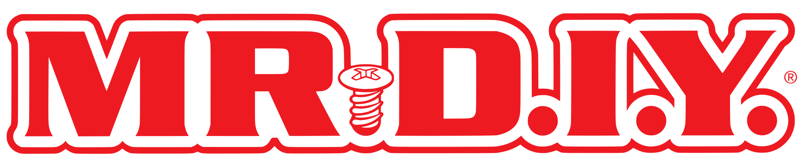

OMS · TMS · Unified Commerce operasyonu:
teklif sunumu
Stok, sipariş, teslimat, mağaza ve pazaryeri operasyonunu tek platformda yöneten Commerce LAB ürün ailesi için teklifimiz: proje anlayışı, çözüm, ürün yetkinlikleri, mimari, entegrasyon, geçiş, plan, SLA ve ticari yapı.
Teklif · Kasım 2026
Sürüm · v1
Hazırlayan · Commerce Lab E-Ticaret Çözümleri A.Ş.
Teklif yapısı
Bu sunum on bölümde ilerler
| # | Bölüm | Bu sunumda |
|---|---|---|
| 01 | Şirket, ürünler ve teknoloji · İngilizce | Kim olduğumuz, neden farklıyız, tüm ürünleri içeren platform topolojisi, teknolojik yetkinlikler (MACH, PBC, genişletilebilirlik), referans müşteriler, liderlik ekibi |
| 02 | Yönetici özeti | Proje anlayışımız, ebebek ihtiyaçlarının karşılığı, müşterilerimizde ölçülen kazanımlar, entegrasyon hızı ve sistem performansı |
| 03 | Önerilen çözüm | Kapsam ve sistem sahipliği, ürün ailesi, çözüm topolojisi, satış kanalları, stok kaynakları, veri ve karar sahipliği, örnek sipariş senaryosu |
| 04 | Ürün yetkinlikleri | ComHub, OMS, mağaza uygulamaları, TMS, PIM ve AI mapping, Marketplace Management, Control Tower; ACOMS: KPI seti, otonom yönetim ve AI agent'ları |
| 05 | Teknik mimari ve güvenlik | Mimari ilkeler, multi-tenant yapı, CI/CD, teknoloji yığını, üretim topolojisi, güvenlik, ölçekleme |
| 06 | Entegrasyon stratejisi | Entegrasyon modeli, ERP ile depo ve mağaza stok entegrasyonu, entegrasyon envanteri, Control Tower |
| 07 | Geçiş stratejisi | Fazlı geçiş, paralel çalışma ve otorite, açık sipariş ve stok geçişi, pilot mağaza ve yaygınlaştırma |
| 08 | Uygulama planı | Yedi fazlık plan, faz içerikleri, metodoloji, kabul kapıları, RACI, ekip, test ve cutover, riskler, KPI ölçüm planı |
| 09 | Destek, SLA ve servis taahhütleri | Ölçülen KPI'lar, SLA tablosu, destek modeli, change management, felaket kurtarma |
| 10 | Ticari teklif, varsayımlar ve Infosec | Ticari yapı, varsayımlar ve kapsam dışı, bilgi güvenliği |
01
About Commerce Lab
Company profile and references
A team that came out of retail, an end-to-end commerce and operations platform of its own making, live deployments at Türkiye's leading brands.
Who we are
Commerce and operations for enterprises, on one platform
CommerceLab is a cloud-based enterprise Commerce & Supply Chain platform. It runs every sales channel, business model and operational need from a single, flexible and scalable system: a Commerce ERP / operating system.
- Vision: to be one of the leading platform providers in digital commerce and operations.
- Mission: help our customers maximise sales potential while achieving operational excellence at minimal cost.
- Company: Commerce Lab E-Ticaret Çözümleri A.Ş. · Windowist Tower, Maslak, İstanbul · a software product company run by its co-founders.
30+specialists; experience at 100+ leading retailers in Türkiye
$400M+annual commerce volume (GMV) through the platform; 50K+ orders a day
1B+API calls; 99.99%+ availability, response time < 500 ms
Positioning
Why we are different
01
360° coverage
Products spanning the full commerce and supply-chain stack with maximum extensibility. A module you do not use today opens on the same platform tomorrow.
02
Built by operators
A team that built e-commerce and IT at Boyner, Beymen, Koton and Demsa; hands-on retail experience behind every product decision.
03
Sales × operations
We close the gap between selling and fulfilling end to end: from the experience layer to orders, inventory and logistics.
04
Your extended team
Custom needs are met with a tailor-made approach; we work like your digital IT department rather than shipping software and leaving. Every sprint produces a measurable business outcome.
05
No vendor lock-in
A product company that creates no version complexity and no closed ecosystem; with Open API and full export, data and URLs are always yours.
06
AI-powered platform
Inside the product (AI PIM, search, conversational commerce) and while building it (AI-assisted code, tests and review); ACOMS roadmap towards semi-autonomous operations.
Platform components · all products
Channel to carrier, one platform
Every box is a Packaged Business Capability with its own release line: run one, or run them all. What you don't use today is one switch away.
MACH-enabled architecture
Modern architecture, future-proofed: Microservices · API-first · Cloud-native · Headless
- Microservices (domain driven): capabilities deploy and scale independently; a modular monolith inside each PBC, without the operational sprawl
- API-first: every function exposed through advanced APIs, including GraphQL; everything the console does can be done via API
- Cloud-native: containerised, auto-scaling, resilient by design; Amazon EKS, Karpenter, HPA
- Headless: presentation fully decoupled from commerce logic; web, app, store and marketplace channels consume the same API
What it means for ebebek
Take the best component for each job and let every layer move at its own pace. New channels, companies and business models plug in; nothing gets re-platformed. No lock-in, full export.
Packaged Business Capabilities
Composable by capability, not by feature
Each product is a self-contained PBC: multi-tenant, cloud-native, independently versioned; it delivers a complete business capability out of the box.
Self-contained
Own data, logic and API. No hidden coupling between capabilities; changing one does not affect the others.
Mix & match
Run a single PBC alongside existing systems, or compose the full suite. For ebebek, ERP, WMS and POS stay where they are and integrate.
Independently evolvable
Upgrade or replace a capability without disrupting the rest of the estate; each PBC has its own release line.
Ten PBCs: Commerce Orchestrator · PIM / Catalogue · Marketplace Management · Campaign Engine · Headless CMS · Payment / Checkout · CRM · OMS · TMS · WMS. OMS, TMS, PIM and Marketplace Management are in the ebebek scope; the rest are ready on the same platform.
Highly extensible · mechanisms
Customise in-product and cross-product without forking the core
Configure
Toggles and feature flags
Capabilities switch on or off per tenant, environment or rollout wave; gradual releases and A/B experiments without redeployment. A feature live on one channel can stay off on another.
Configure
Rules and policies
Rule, evaluation and action engines plus the state machine: business logic changes instantly, without code. Detail on the next slide.
Extend
User exits
Defined extension points inject custom logic at both the database layer (stored procedures) and the application layer; behaviour is tailored, the upgrade path is preserved.
Extend
Scripting and plug-ins
Lightweight scripts for field-level transforms in ComHub flows; a formal plugin architecture to add or replace capabilities, custom sourcing algorithms included.
Integrate
Third-party connectors
Ready connectors for marketplaces, PSPs, banks, carriers, ERP/MDM and BI systems; event-driven hooks work across products.
Inside
Mediator · CQRS
An in-process mediator decouples senders from handlers; clean, testable, CQRS-friendly flows. Extensions never touch core code.
ebebek-specific logic (sourcing rules, order-flow steps, carrier exceptions) lives in these layers; the shared codebase is never forked and platform releases keep flowing uninterrupted.
Highly extensible · engines
Events, engines and the state machine: behaviour by configuration
Domain eventorder placed
→
Message busRabbitMQ
→
Rule · evaluation · actionMicrosoft Rules Engine
→
State transitionevaluate · act · notify
→
ConsumersOMS · CRM · ComHub
Event-driven
Loosely coupled, reactive by default
Commands and events decouple producers from consumers; asynchronous processing absorbs spikes and isolates failure. Auto-fix-and-notify loops detect and reconcile inconsistencies; flows are replayable and auditable.
Engines
Business logic that ops teams control
A rule engine built on the Microsoft Rules Engine expresses any scenario; the evaluation engine scores options with best-choice and similar mechanisms; the action engine executes the result. The same infrastructure is reused for sourcing, campaigns, payments, dispatch and content.
State machine
Every entity, every status: a governed lifecycle
For orders, customers, products, payments, shipments and returns, states and transitions are explicit, validated moves; an invalid transition is impossible by construction. Every transition is evaluated against internal and external systems, acted on (re-source, split, route) and announced through events and webhooks; states are configured per tenant.
Reference customers


Fashion, footwear, home, retail and QSR brands on one platform

Leadership team
Hands-on leadership, 30+ engineers
Onur Kemer
Co-founder · CEO
- 25 years of industry experience
- Built and led IT and e-commerce departments at Boyner, Demsa and Koton
- Led Boyner Software and Business Development
- ERP and production-planning engineering (iCron, Ariva)
YTÜ Computer Engineering, 2002
İsmail Danacı
Co-founder · CTO
- 20 years of industry experience
- Built the CommerceLab e-commerce platform (v1)
- Boyner and Koton e-commerce infrastructure
- Boyner POS systems · ERP engineering (Bilteks)
Sakarya University, Computer Programming, 2008
Arif Kula
CPO · Chief Product Officer
- 32 years of industry experience
- Boyner CTO (3 yrs) · Beymen CTO (12 yrs)
- Boyner IT Manager (8 yrs)
- DorukNet, software engineer (4 yrs)
İTÜ Mathematics Engineering, 1992
Hakan Gürses
Software Development Manager · Architect
- 21 years of experience
- Built the CommerceLab e-commerce platform (v1)
- Marketplace integration platform (Altınyıldız)
- Boyner CRM · Medical Park stream data processing
Yeditepe Computer Eng., 2005 · Doğuş Univ. PhD, 2014
Faruk Öksüz
Software Development Manager · Architect
- 30 years of industry experience
- IBM POS systems, Software Development Director (14 yrs)
- Campaign systems · loyalty · distributed data
- Pfizer software manager
ODTÜ Computer Engineering, 1999
Gökhan Koçak
Software Development Manager · Architect
- 22 years of experience
- Built the CommerceLab e-commerce platform (v1)
- 5px Software & Project, co-founder
- RND E-Commerce Solutions CTO · launched 30 e-commerce systems
Uludağ University, 2004
02
Yönetici özeti
Proje anlayışı, yaklaşım ve iş değeri
ebebek'in hedeflerini nasıl okuduğumuz, bu hedeflerin platformdaki karşılığı ve müşterilerimizde ölçtüğümüz sonuçlar.
Proje anlayışımız
Daha çok satış, daha mutlu müşteri, daha düşük operasyon maliyeti
ebebek, 200'ü aşkın mağazası, dağıtım merkezi, kendi dijital kanalları ve pazaryerleriyle Türkiye'nin en geniş anne-bebek perakende ağlarından birini işletiyor. Bu ağın tamamını satışa ve teslimata çalıştırmak, dağıtık stok ve sipariş yönetimini mükemmelleştirmekten geçiyor.
Hedef; tüm mağaza, depo ve vendor stoklarını kanallara stok ayırmadan satışa açmak, bunu yaparken yok satma ve gecikme riski yaratmamak, her sepeti maliyet, müşteri memnuniyeti, ürünün fırsat maliyeti ve operasyonel kapasiteye göre en doğru kaynaktan ve en az paketle göndermektir.
Commerce LAB olarak OMS, TMS, Marketplace Management, InStore Commerce, Omnichannel Operations, ComHub ve Control Tower'dan oluşan ürün ailemizle bu ihtiyaçların tamamını bugün canlıda çalışan ürünlerle karşılıyoruz; teknik ve ticari kararların her aşamasında ebebek ekipleriyle birlikte çalışarak proje faydasını maksimize etmeyi hedefliyoruz.
Amaç
- E-ticaret satışlarını maksimize etmek
- Müşteri memnuniyetini maksimize etmek
- Operasyon maliyetinin satışa oranını minimize etmek
Strateji
- Ürün gamı ve bulunurluk en üst seviyede
- Teslimat daha hızlı, daha kaliteli, daha az paketle
- Elleçleme, sarf ve kargo maliyetinin siparişe oranı daha düşük
ebebek'in ihtiyaçları
Her ihtiyacın platformda somut bir karşılığı var
| İhtiyaç | Commerce LAB karşılığı | Ürün |
|---|---|---|
| Tüm mağaza ve depo stokları satışa açılsın | Depo, mağaza ve vendor kaynak tipleriyle tek stok havuzu; kanallara stok ayırmadan satış | OMS · Enterprise Inventory |
| Yok satma ve gecikme riski oluşmasın | Emniyet stoku kuralları, rezervasyon ve yoldaki stok; hesap 150 ms, kanala bildirim 925 ms; yok satma ~%0,02 | OMS · ATP · Control Tower |
| Sepet en doğru şekilde paketlere bölünsün | Maliyet, müşteri memnuniyeti, fırsat maliyeti ve kapasiteyi ağırlıklandıran skor bazlı sourcing; sipariş bağlamına göre strateji, özel senaryoya plugin algoritma | OMS · Sourcing |
| Mağazalar dağıtım merkezi yetkinliği kazansın | Mağazada pick, sort, pack, label, ship; mobil uygulama, yazıcı ve kargo teslim tutanağı | Omnichannel Operations |
| Pazaryerinde paket bölme ve kargo değiştirme | Trendyol, Hepsiburada, N11 ve Boyner'de paket bölme; kargo ve depo değişimi entegrasyon üzerinden | Marketplace · Seller |
| Vendor stokları dropship ile satışa kazandırılsın | Vendor onboarding, Seller Portal, ürün onayı, vendor siparişi ve sevkiyatı; katalog stok maliyeti olmadan büyür | Marketplace · Operator |
| Kanallarda yok satma, gecikme, fiyat farkı olmasın | Stok, fiyat, sipariş ve statü farkları sürekli karşılaştırılır; fark otomatik düzeltilir | Control Tower · ComHub |
| Instore Ordering, Endless Aisle, Unified Checkout | Mobile ve Fix POS, mağazada olmayan ürünün satışı, mağazada kartla ödeme (card present) | InStore Commerce |
| Best seller ürünler en kârlı kanala yönlensin | Satış hızı ve stok devir skoru; kanal bazlı emniyet stoku ve kanal satış durumu yönetimi | OMS · Marketplace |
| Omnichannel fonksiyonlar | Reserve & Collect (mevcut), Click & Collect, Ship From Store, Instore Ordering, Store Return & Exchange | OMS · Omnichannel Ops |
| Tüm kargolar, teslimat çeşitliliği, dinamik ücret | 30+ kargo tek entegrasyonda; aynı gün, ertesi gün, randevulu; lokasyon, desi, kargo ve hizmete göre ücret; kural ve performans bazlı atama | TMS |
| Orijinal kargo etiketi ve mutabakat | Kargonun kendi etiketi paketleme anında basılır; kargo, komisyon ve SLA mutabakatı | TMS · Marketplace |
| Otomatik Order Cart yönetimi | Auto cancel, auto re-sourcing, auto partial shipment; operasyon yükü azalır | OMS · Order Cart |
Yaklaşımımız
Yazılım değil, operasyonu birlikte sahiplenen bir iş ortağı
Hedefimiz, ebebek'in stok ve mağaza ağının tamamını satış ve fulfillment kapasitesine dönüştüren, satışı ve operasyonu aynı hedefe çalıştıran bir Unified Commerce modeli kurmaktır. Bu modelde kendimizi bir yazılım tedarikçisi değil, ebebek'in kendi IT ve operasyon ekibi gibi çalışan, ticari hedefleri sahiplenen bir iş ortağı olarak konumluyoruz.
01 · Tek stok, tüm kanallar
Kanala stok ayırmadan satış
Depo, mağaza ve vendor stoku tek havuzda; web, uygulama, pazaryeri ve mağaza aynı satılabilir stoktan beslenir, emniyet kuralları kanal bazında korur.
02 · Optimizasyon, kural değil
Her sipariş için en iyi senaryo
Sourcing; maliyet, müşteri memnuniyeti, fırsat maliyeti ve kapasiteyi ebebek'in verdiği ağırlıklarla puanlar, en yüksek puanlı gönderim senaryosunu seçer.
03 · Mağaza bir hub
Her mağaza mini fulfillment merkezi
Ship From Store, Click & Collect, transfer ve mağaza içi satış aynı mobil uygulamada; mağaza stoku ve iş gücü online siparişe çalışır.
04 · Çalışma modeli
IT departmanınız gibi
Bir kez proje yapıp her yeni isteği ayrı projeye çevirmiyoruz. Fazlar hızlı kazanımla başlar; her fazın faydası ebebek verisiyle ölçülür.
Metrik özeti · müşterilerimizdeki kazanımlar
Daha az paket, daha düşük kargo maliyeti, daha hızlı teslimat
~%50daha az paket; çoklu mağaza siparişlerinde
%15–20+toplam kargo maliyetinde azalma (TMS)
%20+teslimat süresinde iyileşme; aynı teslimat rotasında
~%2P&L'e katkı; best seller kanal yönlendirmesi
| Kaldıraç | Nasıl | Müşterilerimizde ölçülen etki |
|---|---|---|
| Sourcing | Tüm olası gönderim senaryoları maliyet, müşteri memnuniyeti, fırsat maliyeti ve kapasite ağırlıklarıyla puanlanır; en iyi seçenek 700 ms'de belirlenir | Çoklu mağaza siparişlerinde %50'ye yakın paket azalması |
| Kargo kararı · TMS | 30+ kargo tek entegrasyonda; atama kural ve fiyat/performans bazlı; desi, kota ve kara liste yönetimi | Toplam kargo maliyetinde %15–20 üzeri azalma; aynı rotada %20 üzeri daha hızlı teslimat |
| Kanal yönlendirme | Satış hızına göre tükenecek best seller ürünler en uygun marjlı satış kanalına otomatik yönlenir | P&L'e %2'ye yakın katkı |
| Stok doğruluğu ve hız | Stok değişimi 150 ms'de hesaplanır, 925 ms'de kanala bildirilir; farklar Control Tower'da otomatik düzeltilir | Tüm kanallarda yok satma ~%0,02 |
Kaynak: Commerce LAB müşteri uygulamaları. Sonuçlar kanal karması, sepet yapısı ve taşıyıcı anlaşmalarına göre değişir; ebebek için baz değerler keşifte alınır ve kazanım aynı veri setiyle ölçülür. Sourcing, TMS ve kanal yönlendirme etkileri birbirine eklenmemelidir.
Fayda modeli · birim maliyetler
Önlenen her paket ~125–140 TL, her gönderi ~18–24 TL
| Kaldıraç | Birim maliyet varsayımı | Mekanizma | Birim etki |
|---|---|---|---|
| Daha az paket · Sourcing | Paket başına kargo ~120 TL + koli 20 TL ya da torba 4,5 TL | Çok kaynaklı siparişte sepet daha az pakete bölünür; müşterilerimizde çoklu mağaza siparişlerinde %50'ye yakın paket azalması | Önlenen paket başına ~125–140 TL |
| Kargo kararı · TMS | Gönderi başına kargo ~120 TL (4 desi 95,9 · 6 desi 105,95 · 8 desi 150,9 TL) | Kural ve fiyat/performans bazlı taşıyıcı ataması; toplam kargo maliyetinde %15–20 üzeri azalma | Gönderi başına ~18–24 TL |
| Kanal yönlendirme | Kanal komisyon ve marj farkı | Tükenecek best seller ürünler en uygun marjlı kanalda satılır | P&L'e ~%2 katkı |
| Yok satma ve iptal | İptal edilen siparişin kaybı ve pazaryeri cezası | Stok 925 ms'de kanalda; farklar otomatik düzeltilir | Yok satma ~%0,02 |
| Operasyon yükü | Elleçleme ~15 TL / ürün (stoklama dahil) | Auto cancel, auto re-sourcing, auto partial shipment; manuel müdahale azalır | Manuel müdahale oranı keşifte ölçülür |
Yıllık etki · paket
Çok kaynaklı sipariş × önlenen paket × ~125–140 TL
ebebek'in çok kalemli ve çok kaynaklı sipariş adedi keşifte alınır; aynı sipariş ve stok veri setiyle kural bazlı yaklaşıma karşı simülasyonla ölçülür.
Yıllık etki · kargo
Gönderi adedi × ~18–24 TL
Taşıyıcı tarifeleri, kota ve bölge kırılımı keşifte alınır; Faz 1'de TMS mevcut yapıda devreye girdiğinde baz döneme karşı ölçülür.
Kaba tahmin: birim maliyetler çalışma varsayımıdır; ebebek'in gerçek birim maliyetleri ve sipariş hacmiyle keşifte güncellenir. Sourcing, TMS ve kanal yönlendirme etkileri birbirine eklenmemelidir.
Metrik özeti · entegrasyon hızı
Sipariş 1,2 saniyede içeride, stok 925 ms'de kanalda
1,2 snkendi kanal (web, app) siparişi OMS'te
150 msstok değişimi hesabı; emniyet stoku, yoldaki stok ve rezervasyon dahil
925 msstok değişimi kendi kanala bildirildi
700 mssourcing kararı / sipariş
| Akış | Ölçülen süre | Kapsam |
|---|---|---|
| Sipariş çekme · kendi kanal | 1,2 sn | Web ve uygulama siparişinin OMS'e alınması |
| Sipariş çekme · pazaryerleri | 26 sn | Pazaryeri siparişinin OMS'e alınması |
| Stok değişimi hesabı | 150 ms | Emniyet stoku, on-transit ve rezervasyon hesabı sonrası satılabilir stok |
| Stok bildirimi · kendi kanal | 925 ms | Hesaplanan değişimin web ve uygulamaya bildirimi |
| Stok bildirimi · pazaryeri, kritik stok | 1,2 sn | Stok 2 ve altına düştüğünde öncelikli hat |
| Stok bildirimi · pazaryeri, genel | 6 sn | Genel stok bildirim akışı |
Kaynak: canlı müşteri ortamı, ComHub ve OMS ölçümleri. Bu hızların ön koşulu ERP katmanından stok ve hareketlerin hızlı ve hatasız alınmasıdır; bunun için geliştirdiğimiz soket yapısı ve ebebek ERP entegrasyonu 06. bölümde.
Metrik özeti · Sistem performansı
Kampanya zirvesinde de sıfır hata
50K+sipariş / gün, platform geneli
1B+API isteği / ay
%99,99+erişilebilirlik
< 500 msAPI yanıt süresi; ölçülen ortalama 379 ms · Apdex 0,98 (New Relic)
OMS yük testi · stok ve sourcing
Test edilen ölçek 50 milyon satır stok ve 2.000 stok kuralı. Bu bir limit değil, test edilen hacimdir: kapasite Karpenter ve HPA ile yatayda büyür, mimari bir üst sınır tanımlamaz.
| Senaryo | Uygulanan yük | Süre | Sonuç |
|---|---|---|---|
| Stok değişimi | 50 milyon satır stok ve 2.000 stok kuralı üzerinde dakikada 5.000 stok değişimi | Ortalama < 200 ms | Değişim kaydı türetme süresi; emniyet stoku, rezervasyon ve kanal kuralları uygulanmış halde |
| Sourcing | Dakikada 1.000 sipariş | ~700 ms / sipariş | Her sipariş için olası gönderim senaryoları puanlanır, en iyi kaynak ve paket kararı verilir |
ebebek için: aynı test, keşifte alınan stok satırı, kural sayısı ve kampanya dönemi sipariş hacminin katlarıyla go-live ve her kampanya öncesi tekrarlanır.
03
Önerilen çözüm
Tek stok, tek sipariş, tek operasyon
Satış kanalları ve dış sistemler ComHub ile bağlanır; OMS, TMS, Marketplace Management ve mağaza uygulamaları aynı platformda çalışır; Control Tower uçtan uca izler.
Çözüm kapsamı ve sistem sahipliği
Ne biz yapıyoruz, ne yerinde kalıyor
| Bileşen | Commerce LAB rolü | Mevcut sistem / sahiplik | Teklif durumu |
|---|---|---|---|
| OMS | Kurumsal envanter, satılabilir stok (ATP), rezervasyon, sourcing, sipariş, iade ve geri ödeme | ebebek.com, uygulama, pazaryerleri; ERP stok ve hareketleri | Kapsamda |
| TMS | Checkout teslimat seçenekleri, taşıyıcı seçimi, etiket, takip, iade ve mutabakat | Kargo firmaları ve anlaşmaları | Kapsamda |
| Marketplace · Seller | Dış pazaryerlerinde ürün, stok, fiyat, sipariş, iade ve mutabakat | Pazaryeri hesapları | Kapsamda |
| Omnichannel Operations | Mağazada pick, sort, pack, label, ship; Click & Collect, Reserve & Collect, Ship From Store, transfer | Mağaza ekipleri, cihaz ve yazıcılar | Kapsamda |
| Store B2B Operations | Mal kabul ve sevk, sayım, raf, etiket, iç transfer, mağaza ikmali | ERP mağaza stok kayıtları | Kapsamda |
| InStore Commerce | Mobile ve Fix POS, mağazadan sipariş, Endless Aisle, card present ödeme | Mevcut POS, ödeme cihazı ve mali belge altyapısı | Kapsamda |
| Marketplace · Operator | Vendor onboarding, Seller Portal, ürün onayı, vendor siparişi, komisyon ve settlement | ebebek Marketplace | Opsiyonel |
| ComHub | Kanal ve dış sistem entegrasyonu, veri dönüşümü, süreç orkestrasyonu | — | Kapsamda |
| Control Tower | Veri tutarlılığı, entegrasyon sağlığı, operasyonel izleme ve alarm | — | Kapsamda |
| ERP · WMS · POS · CRM · finans | ComHub üzerinden çift yönlü entegrasyon | ebebek'te kalır; ana veri ve mali kayıt sahibi | Entegrasyon |
| PIM | ERP ürününün zenginleştirilmesi, AI destekli pazaryeri kategori, nitelik ve değer eşlemesi, kanala yayın | ERP ürün ana verisi | Kapsamda |
| ACOMS | KPI seti, alarm ve aksiyon yönetimi; OMS, TMS ve Marketplace kararları için AI agent'ları (yol haritası) | — | Kapsamda |
| Storefront · CMS · ödeme | Teklif dışı; ileride aynı platformda açılabilir | ebebek mevcut sistemleri | Kapsam dışı |
Ürün ailesi
Dokuz ürün, tek operasyon modeli
Kanallarebebek.com · ebebek App · 200+ mağaza · pazaryerleri · ebebek Marketplace · kurumsal müşteriler (B2B) · dijital kanallar
ComHubAPI Management · Channel Connectors · Data Transformation · Process Orchestration · Event Streaming · Connector Library
Sipariş ve stokOMS Enterprise Inventory · Safety Stock · ATP · Reservation & On-Transit · Order Orchestration / Sourcing · Automated Order Cart · Return · Refund · Customer Notifications · Customer Services
TeslimatTMS Carrier Integrations / Hub · Check Out Service · Dispatch Service · Labeling Service · Return Management · Tracking & Reporting · Reconciliation Service
MağazaInStore Commerce Omnichannel Operations Store B2B Operations POS, mağazadan satış, pick-pack-ship, C&C, SFS, transfer, sayım, ikmal
Ürün ve pazaryeriPIM Marketplace · Seller Marketplace · Operator AI mapping, entegrasyon, fiyat, komisyon; vendor onboarding, settlement
Control Tower · ACOMSKanal, uygulama ve dış sistem izleme · proaktif alarm · 352 KPI'lık BI seti · otonom yönetim ve AI agent'ları
Koyu rozet teklif kapsamındaki ürünler; açık rozet opsiyonel faz (Multi-Vendor · MP Operator).
Çözüm topolojisi
Kanaldan kaynağa tek omurga
Satış kanalları
Yedi kanal, tek kesintisiz müşteri deneyimi
| Kanal | Rol | Platformda nasıl çalışır | İlgili ürün |
|---|---|---|---|
| ebebek.com | Web Store | Sipariş 1,2 sn'de OMS'te; satılabilir stok ve teslimat seçenekleri checkout'a servis edilir | OMS · TMS Check Out Service |
| ebebek App | Mobile App | Web ile aynı stok, sipariş ve teslimat servisleri; tek sipariş geçmişi | OMS · TMS |
| Physical Stores | 200+ mağaza | Mağaza hem satış noktası hem stok ve fulfillment kaynağı; POS satışı OMS'e kaydedilir | InStore · Omnichannel Ops · Store B2B |
| Marketplaces | Seller (ebebek) · dış platformlar | Trendyol, Hepsiburada, N11, Amazon ve diğerleri tek bağlantıdan; kanal bazlı emniyet stoku | Marketplace · Seller |
| ebebek Marketplace | Operator · 3rd party vendor'lar | Vendor ürünleri ebebek.com'da; ortak müşteri siparişi, ayrı fulfillment sorumluluğu | Marketplace · Operator · OMS |
| Corporate Customers | B2B Sales | Kurumsal siparişler aynı stok havuzu ve sipariş akışından karşılanır | OMS |
| Digital Channels | Chat · Call Center · AI Agent · Social | Sipariş, statü, iptal ve iade işlemleri aynı API'lerle; müşteri hizmetleri tek sipariş görünümünde çalışır | OMS · Customer Services |
Tüm kanallar aynı satılabilir stok, sipariş, teslimat ve iade servislerini kullanır; kanallar arasında yok satma, gecikme ve fiyat farkı Control Tower ile izlenir.
Stok ve fulfillment kaynakları
Dört stok kaynağı, birleşik fulfillment
Central Distribution Center
ebebek · ana stok
Dağıtım merkezi stoku tüm kanallara açılır; mağaza ikmali ve müşteri sevkiyatı aynı kaynaktan planlanır.
E-Commerce Warehouse
Online sipariş karşılama
E-ticaret deposu sourcing'in ilk adayıdır; WMS ile sipariş, toplama ve sevk statüleri çift yönlü akar.
Physical Store Inventories
Tüm mağazalar
Mağaza stoku emniyet kuralları ve kapasiteyle satışa açılır; Ship From Store, Click & Collect ve transferle siparişe dönüşür.
Vendor Warehouses
3rd party vendor'lar
Vendor stoku dropship ile satışa kazandırılır; ebebek stok ve operasyon maliyeti taşımadan kataloğu büyütür.
| Kaynak tipi | Fulfillment tipleri | Stok türleri ve segmentler | Gruplama |
|---|---|---|---|
| DC · E-Com DC · Store · Vendor | Customer Shipment · Customer Pickup · Drop Shipment · Flow Through · Transfer | Fiziksel ve sanal stok; reyon, depo arkası gibi segmentler; bloke ve karantina stok | Depo grubu listeleriyle esnek aggregate stratejisi; kanal-kaynak eşlemesi |
Kaynakların yetenek bayrakları (gönderim yapabilir, teslim noktası olabilir, transfer alabilir), çalışma saatleri ve günlük kapasiteleri OMS'te tanımlanır; sourcing bu tanımlarla karar verir.
Veri ve karar sahipliği
Her verinin ve her kararın tek sahibi var
| Alan | Kayıt sahibi | Commerce LAB'de | Akış |
|---|---|---|---|
| Ürün, fiyat, barkod | ERP (ana veri) · PIM (kanal içeriği) | PIM'de zenginleştirme ve AI ile pazaryeri eşlemesi; OMS'te sipariş zenginleştirme | ERP → ComHub → PIM → kanallar |
| Fiziksel stok ve hareketler | ERP · WMS · POS | Stok hareketleri event bazlı alınır; tam eşitleme ile doğrulanır | ERP → ComHub → OMS |
| Satılabilir stok (ATP) | OMS | Emniyet stoku, rezervasyon ve yoldaki stok düşülerek kanal bazında hesaplanır | OMS → tüm kanallar |
| Sourcing kararı | OMS | Sipariş hangi kaynak ve kaç paketle karşılanacak | OMS → WMS, mağaza, vendor |
| Taşıyıcı ve servis kararı | TMS | Müşteri seçimi veya kural / performans bazlı atama, etiket | OMS → TMS → kargo firması |
| Sipariş ve paket statüsü | OMS | Tüm kanalların siparişi tek statü modelinde; kanala ve müşteriye bildirim | OMS ↔ kanal, ERP, WMS |
| Fatura ve mali kayıt | ERP · e-belge sağlayıcı | Sevkten faturaya geçiş tetiklenir, e-belge izlenir | OMS ↔ ERP |
| Müşteri, sadakat, kampanya | CRM / mevcut sistemler | Siparişte kullanılır; InStore'da birleşik müşteri görünümü | CRM ↔ ComHub |
| Vendor, komisyon, settlement | Marketplace · Operator | Vendor kaydı, sözleşme, komisyon oranı ve hakediş | Operator ↔ ERP / finans |
Sahiplik matrisi keşifte ebebek sistemleriyle satır satır doğrulanır; paralel çalışma döneminde her kanal için stok ve sipariş kararının tek sahibi ayrıca tanımlanır (07. bölüm).
Örnek sipariş senaryosu
Karma bir sepet, uçtan uca
Bir müşteri ebebek.com'dan üç ürün alıyor: biri depoda, biri yalnızca mağazada, biri vendor ürünü.
01SiparişComHub siparişi 1,2 sn'de OMS'e aktarır; stok rezerve edilir, kanallar güncellenir.ComHub · OMS
02SourcingOlası senaryolar puanlanır: depo + en yakın uygun mağaza + vendor; en az paket, en düşük maliyet.700 ms
03HazırlamaDepo görevi WMS'e, mağaza görevi mobil uygulamaya, vendor siparişi Seller Portal'a düşer.Omnichannel Ops · Operator
04TaşıyıcıTMS her paket için bölge, desi, kota ve performansa göre taşıyıcıyı seçer; orijinal etiket basılır.TMS · Dispatch · Label
05TakipPaket statüleri birlikte izlenir; müşteriye bildirim, kanala statü ve takip numarası gider.OMS · TMS
06İadeİade kodu üretilir; mağazaya veya kargoyla iade, satır bazında geri ödeme hesaplanır.RMA · Refund
07MutabakatKargo maliyeti ve SLA, vendor komisyonu ve pazaryeri hakedişi kontrol edilir.Reconciliation
Tüm adımlar Control Tower'ın izlemesinde: veri farkı ve entegrasyon sorunu müşteriye yansımadan yakalanır. Önerilen demo senaryosudur; karma sepet, bölme ve vendor fulfillment kuralları ebebek iş kurallarıyla doğrulanır.
AI ile operasyon
Operasyon ekranla değil, soruyla yönetilir
Erişim
API'ler MCP olarak yayınlı
Sipariş, stok, sevkiyat ve rapor servisleri MCP araçları olarak sunulur; Claude, ChatGPT ve benzeri asistanlar yetki dahilinde bağlanır.
Analiz
Sor, yanıtını al
"Dün kaynağı bulunamayan siparişler hangi mağazalarda yoğunlaştı?" gibi sorular semantik rapor API'si ile tek adımda yanıtlanır.
Yol haritası
ACOMS: yarı otonom operasyon
İstisnayı kendisi yakalayan, öneren ve onayla uygulayan yönetim katmanı. KPI seti, otonom yönetim ve agent'lar 04. bölümde.
Soru"Geciken paketleri taşıyıcıya göre göster"
→
VeriOMS · TMS · Control Tower
→
Öneriyeniden atama · bildirim
→
Onayrol ve iş akışı
→
Uygulamaaudit log
Kontrol ebebek'te: AI öneriyi hazırlar; her yazma işlemi rol yetkisi ve onay akışından geçer, audit log'a yazılır. Veri tenant sınırının dışına çıkmaz.
04
Ürün yetkinlikleri
Topolojideki her ürün, her yetkinlik
ComHub, OMS, mağaza uygulamaları, TMS, PIM, Marketplace Management, Control Tower ve ACOMS: ne yapar, neden farklı, ebebek için karşılığı.
Yetkinlik envanteri · kod tabanından
Kapsamdaki ürünlerde 1.046 yetkinlik, 925'i bugün canlı
| Ürün | Yetkinlik | Canlı | Öne çıkan gruplar |
|---|---|---|---|
| OMS · Order Management | 111 | 105 | Envanter ve bulunurluk, sipariş yaşam döngüsü, iade ve geri ödeme |
| OMS · Sourcing | 34 | 34 | Skor bazlı sourcing, re-sourcing, simülasyon |
| Store Fulfillment & InStore | 63 | 54 | Ship From Store, Click & Collect, POS, Endless Aisle, kiosk, Store B2B |
| TMS | 159 | 142 | Carrier Hub, dispatch kuralları, etiket, takip, iade, mutabakat |
| Marketplace · Seller | 117 | 107 | 13 pazaryeri entegrasyonu, ortak akışlar, seller paneli |
| PIM / Catalogue Management | 188 | 160 | Kategori ve nitelik, toplu işlemler, kanala yayın, ürün feed'leri |
| Marketplace · Operator | 35 | 34 | Onboarding, Seller Portal, ürün onayı, seller API'leri |
| ComHub | 154 | 133 | ERP entegrasyonları, eşleme, kuyruk, workflow, izleme |
| Control Tower & Reporting | 103 | 92 | Mismatch ve auto-fix, operasyon KPI'ları, alarm |
| AI · Commerce Lab AI | 82 | 64 | Intelligent PIM, MCP araçları, asistan ve agent altyapısı |
| Toplam | 1.046 | 925 |
Yöntem
Sunumdan değil, koddan
Envanter, Commerce LAB kod depolarının taranmasıyla çıkarıldı; her satırın kanıtı ilgili kaynak dosyadır. "Canlı" sütunu kodda tamamlanmış ve kullanımda olan yetkinlikleri sayar.
Kalan 121 satır
Kısmi, planlı ya da kullanımı teyit bekleyen yetkinlikler. ebebek kapsamına girenler bu sunumda ilgili slaytta "yol haritası" ya da "keşifte teyit" notuyla açıkça belirtilmiştir.
ComHub · Integration & Orchestration
Kanallar ve sistemler için tek hub
Nedir
API entegrasyonlarının seçimden bakıma tüm yaşam döngüsünü yöneten, satış kanalları ile dış sistemleri aynı hub'da birleştiren entegrasyon ve orkestrasyon platformu.
Neden farklı
Entegrasyonu yalnızca taşımaz; Auto Fix modülüyle hatayı tespit eder, düzeltir ve bildirir. Event bazlı yapı, scripting ve eşleme konsoldan yönetilir.
Etki
Entegrasyonlarda tek hata noktasını ortadan kaldırmak, satışın %5–10'una varan gelir kaybını önleyebilir.
Topolojideki altı yetkinlik
- API Management: kanal ve sistem API'lerinin tek noktadan yönetimi; rate limit, kimlik, loglama.
- Channel Connectors: web, uygulama, mağaza ve pazaryeri kanalları için hazır bağlayıcılar.
- Data Transformation: alan, değer ve kategori eşleme; otomatik eşleme ve kural sihirbazı.
- Process Orchestration: event bazlı kural motoru, workflow ve zamanlanmış işler.
- Event Streaming: RabbitMQ kuyrukları, webhook yayını ve abonelik; hızına göre dinamik çağrı sıklığı.
- Connector Library: ERP, pazaryeri, kargo ve e-belge için tak-çalıştır entegratör mimarisi.
ComHub · bağlantı ve eşleme
ERP'den pazaryerine, hazır desenler
ERP entegrasyonları
Ürün, stok, sipariş, fatura
ERP API gateway üzerinden ürün ve fiyat çekme, toplu ve delta stok, mağaza stoku ve mağazalar arası transfer, sipariş ve iptal aktarımı, fatura ve iade farkı faturası. Nebim ve SAP için canlı adaptörler.
Ürün, stok ve fiyat senkronu
Değişen kayıt kuyruğu
Değişen ürünler kuyruğu, kanal stok modu, depo grubuna göre satılabilir stok, çok seviyeli kanal stok kuralları, ürün bazlı stok ofseti, fiyat eşiği onayı, kritik stokta anlık gönderim (FastLine).
Sipariş ve lojistik akışları
Kanaldan teslimata
Kanallardan yeni sipariş çekme, tek siparişi yeniden çekme, paket statüsünü kanala iletme, fatura linki aktarımı, OMS → TMS sevkiyat ve iade akışı, WMS → OMS entegrasyonu, mağaza stok tükenme bildirimi.
Mapping Management
Ürün seviyesinde tanım gerekmez
PIM kategorisinden pazaryeri kategorisine eşleme, kategori niteliği ve varsayılan değer eşleme, otomatik değer eşleme, zorunlu alan kontrolü, kaynak ve hedefe göre eşleme ekranı, kural sihirbazı.
E-belge
E-fatura ve e-irsaliye
E-belge gönderim kuyruğu, UBL e-irsaliye üretimi ve gönderimi, belge durum sorgusu, HTML/PDF üretimi ve XSD doğrulama; sağlayıcı seçimi OMS'te.
Çekirdek ve kuyruklar
Tak-çalıştır entegratör
Çok kiracılı konfigürasyon, şirket ve satış kanalı tanımları, kanal parametre yönetimi, toplu veri aktarımı (CSV, DB, görsel), webhook sipariş kuyruğu, kuyruk kaydı izleme ve yeniden kuyruğa alma.
ebebek ERP, WMS ve POS adaptörleri keşifte API dokümanı ve test ortamıyla netleşir; entegrasyon desenleri 06. bölümde.
ComHub · orkestrasyon ve izleme
İş akışı, zamanlama ve log: hepsi konsolda
Workflow, scheduler ve kural motoru
- Event bazlı kural motoru; JavaScript ile kural değerlendirme; kullanıcı tanımlı event aksiyonları.
- Çok kiracılı iş zamanlayıcı: cron, öncelik ve eşzamanlılık kontrolü; Kubernetes Job yürütücüsü.
- Yeniden deneme, timeout, manuel ve toplu çalıştırma; kısmi başarı ve çalışma geçmişi.
- Uyarı ve otomatik sonlandırma eşikleri; eşzamanlılık kilidi ve çoklu replika.
- Job REST API: toplu tetikleme, duraklatma; konsolda scheduler ekranları.
İzleme, log ve bildirim
- Entegrasyon batch logları ve ürün aktarım logları; ham istek ve yanıt S3'te saklanır.
- OpenSearch üzerinde merkezi log arama; job telemetrisi.
- Hata mesajı eşleme ve mesaj kuralları: karşı sistemin hatası anlamlı aksiyona çevrilir.
- Webhook abonelikleri ve geçmişi; teslim kayıtları ve yeniden gönderim.
- Operasyonel e-posta listeleri; çok dilli şablon editörü, birden çok iletişim sağlayıcısı.
Yol haritası: API Gateway ürünü (rota ve metrik ekranları) ve OMS → WMS entegrasyon adaptörü planlıdır; n8n ile görsel workflow tasarımı için geliştirme teyidi keşifte verilir.
OMS · Order Management System
Siparişin tüm yaşam döngüsü, tek stok görünümü
Nedir
Sipariş girişinden stok yönetimine, sipariş takibinden ERP ve diğer kurumsal sistemlerle entegrasyona kadar tüm sipariş sürecini otomatikleştirir.
Neden farklı
Çok depolu yapı, adaptif gerçek zamanlı envanter yönetimi ve dinamik sourcing ve allocation algoritmaları aynı üründe.
Etki
OMS uygulaması, sipariş doğruluğundaki iyileşmeyle satış gelirinde %10–20 artış sağlayabilir.
Topolojideki on yetkinlik
| Enterprise Inventory Man. | Depo, mağaza ve vendor stoklarının tek görünümü |
| Safety Stock Man. | Depo grubu × ürün hiyerarşisi × kanal bazında emniyet stoku |
| ATP Man. | Kanala uygun satılabilir stok hesabı |
| Reservation & On-Transit Man. | Rezervasyon ve yoldaki siparişlerin stok etkisi |
| Order Orchestration / Sourcing | Siparişi en doğru kaynağa, en az paketle atama |
| Automated Order Cart Man. | Auto cancel, re-sourcing, split ve kısmi sevkiyat |
| Return Man. | İade talebi, RMA, iade paketi onayı |
| Refund Man. | Satır bazında geri ödeme hesabı, otomatik ve manuel iade |
| Customer Notifications | Sipariş, statü, iptal ve iade bildirimleri; webhook |
| Customer Services | Müşteri hizmetleri için sipariş, paket ve müdahale ekranları |
ebebek, Marketplace ve omnichannel siparişlerinin tamamını destekler.
OMS · Enterprise Inventory Management
Tek stok havuzu, sınırsız lokasyon
Multiwarehouse
Tip ve fulfillment türüne göre
Kaynak tipleri: DC, E-Com DC, mağaza, vendor. Fulfillment tipleri: müşteri sevkiyatı, müşteri teslim alma, drop shipment, flow through, transfer. Depo yetenek bayrakları, çalışma saatleri ve kapasite.
Aggregate stratejisi
Depo grubu listeleri
Stok, depo grubu listeleriyle esnek biçimde toplanır; kural grupları ve kanal-kaynak eşlemesiyle hangi kaynağın hangi kanala açılacağı yönetilir.
Stok türleri
Fiziksel, sanal, segmentli
Fiziksel ve sanal stok; reyon ve depo arkası gibi segmentler; fiziksel ve bloke (rezerve) stok; karantina stok kuralı; nitelik bazlı SKU gruplama.
Tek görünüm
Tüm kanallara aynı stok
Envanterin tek görünümü tüm kanallara açılır; kanal stok hesabı, pazaryeri stok gönderimi ve webhook ile stok yayını aynı kaynaktan beslenir.
ERP ile stok
Mağaza seviyesinde çekim
Mağaza seviyesinde stok ERP'den çekilir; toplu / tam eşitleme ve delta eşitleme birlikte çalışır; stok hareket geçmişi ve SKU-barkod eşlemesi tutulur.
Vendor ve paylaşım
Tedarikçi stoku
Tedarikçi stok yönetimi ile vendor stoku aynı havuza dahil olur; tenant'lar arası depo stok paylaşımı desteklenir.
ebebek odağı: stok erişimini artırırken kanallar arasındaki stok tutarsızlığını ve yok satmayı sınırlamak.
OMS · ATP, Reservation & On-Transit
Satılabilir stok 150 ms'de hesaplanır
Fiziksel stokERP · WMS · POS hareketi
→
− Rezervasyonaçık ve yoldaki siparişler
→
− Emniyet stokukaynak × ürün × kanal
→
Satılabilir stokATP · kanal bazında
→
Kanallar925 ms'de bildirim
Adaptif gerçek zamanlı
Stok hızına göre bulk ve delta
Stok hareket hızına göre tam veya değişim bazlı güncelleme; değişim işaretçisiyle (change pointer) delta yayını; eşik altında anlık gönderim.
Rezervasyon
Siparişle düş, iptalle aç
Sipariş bazlı stok düşme ve artırma; stok bloke etme ve çözme; yoldaki siparişler için gelişmiş rezervasyon; sourcing'e açık stok (ATP) ayrı izlenir.
İzleme
Monitor, auto-fix, bildirim
Kanal stoku ile hesaplanan stok sürekli karşılaştırılır; fark otomatik düzeltilir, stok tükendiğinde kanallarda düzeltme tetiklenir.
Yol haritası: offline satış modu ve satış kanalı için akıllı rezervasyon (intelligent reservation) planlıdır.
OMS · Safety Stock Management
Emniyet stoku: mağaza, grup, ürün ve kanal seviyesinde
| Kural seviyesi | Örnek | ebebek için |
|---|---|---|
| Mağaza / mağaza grubu | AVM mağazalarında son 2 adet satışa kapalı | Mağaza segmentasyonu; teşhir ürünü korunur |
| Ürün grubu / hiyerarşi | Bebek arabası kategorisinde mağaza stoku online'a kapalı | Product filtering: hacimli ya da kırılgan ürün filtrelenir |
| SKU | Tek ürün için özel eşik veya stok ofseti | Kampanya ve lansman ürünleri |
| Satış kanalı | Pazaryerinde kritik eşik web'den yüksek | Pazaryeri cezaları ve iptaller önlenir |
| Zaman | Süreli stok kuralı; kampanya boyunca geçerli | Kampanya dönemi korumaları |
| Eşik altı sıfırlama | Stok eşiğin altına düşünce kanalda sıfırlanır | Son ürün yarışı engellenir |
Yönetim
Hiyerarşik kural, sihirbazla tanım
Kurallar depo ve depo grubu × ürün hiyerarşisi × satış kanalı kırılımında hiyerarşik çalışır; en özel kural kazanır. Emniyet kuralı sihirbazı konsolda.
Mağaza stokunu açarken
Mağaza teşvikleri (store incentives), mağaza segmentasyonu ve emniyet kuralları Faz 4'te birlikte kurulur; mağaza stoku hızlı ve güvenli entegrasyonla açılır.
OMS · Order Orchestration / Sourcing
Kural değil, ağırlıklı optimizasyon
Kriter 01
Maliyet
Paket sayısı, kargo maliyeti, mesafe-desi maliyet matrisi, paketleme kaynağı ve sarf.
Kriter 02
Müşteri memnuniyeti
Teslimat süresi, tek pakette gönderim, müşteriye yakınlık, teslimat sözü.
Kriter 03
Ürünün fırsat maliyeti
Satış hızı ve stok devir skoru: ürün, satılma olasılığı düşük olan lokasyondan çıkar.
Kriter 04
Operasyonel kapasite
Mağaza ve depo kapasitesi, iş yükü dengeleme, çalışma saatleri ve cut-off.
Siparişsepet · adres · kanal
→
Tüm senaryolarolası kaynak ve paket kombinasyonları
→
Puanlamaebebek'in ağırlıklarıyla skor / maliyet formülü
→
En iyi seçenek700 ms / sipariş
700 mssourcing kararı / sipariş
~%50daha az paket; çoklu mağaza siparişlerinde
4kriter; ağırlıkları ebebek belirler, konfigüre edilebilir skor çarpanları
OMS · sourcing stratejileri ve simülasyon
Tek algoritma değil, strateji seçimi
Strateji ve kurallar
- Strateji bazlı sourcing: sipariş bağlamına (kanal, ürün, bölge, teslimat tipi) göre farklı algoritma; seçim kural motoruyla.
- Plugin algoritmalar: gerektiğinde kural bazlı özel algoritma eklenti olarak devreye girer.
- Mesafe bazlı tahsis, şehir mesafeleri ve kural seviyeleri; varsayılan kargo çıkış lokasyonu.
- Konsolidasyon: paketleme kaynağı ve kargo maliyetiyle birleştirme kararı.
- Drop-ship ve tedarikçi satırları; kısmi sevkiyat ve paket bölme.
- Kargo kota yönetimi ve kural bazlı taşıyıcı seçimi sourcing'le birlikte.
Simülasyon ve yönetim ekranları
- Sourcing simülasyonu: ağırlık değişikliğinin paket, süre ve maliyete etkisi canlıya almadan görülür; görsel simülasyon ekranı.
- Manuel sourcing penceresi ve manuel yeniden tetikleme.
- Paketleme kaynakları ve kargo maliyetleri, kural seviyeleri ve şehir mesafeleri ekranları.
- Sipariş dağıtım kuyruğu ve toplama statü modeli.
- ERP onaylı sourcing: gerektiğinde karar ERP teyidiyle kesinleşir.
Keşifte teyit: ebebek sipariş ve stok veri setiyle kural bazlı yaklaşıma karşı paket, süre ve maliyet kıyası yapılır. Pazaryeri siparişleri için akıllı stok tahsisi (intelligent inventory allocation) Faz 5 kapsamındadır; geliştirme teyidi keşifte verilir.
OMS · Automated Order Cart Management
Touchless sipariş: insan beklemez
Auto cancel
Otomatik iptal
Ödeme bekleyen sipariş kontrolü ve otomatik iptal; iptal talebinin otomatik onayı veya reddi; iptal edilebilirlik kontrolü.
Auto re-sourcing
Otomatik yeniden atama
WMS reddi veya eksik üründe otomatik yeniden planlama; kaynağı bulunamayan satırlar için otomatik re-sourcing; sourcing ve toplama timeout kontrolü.
Auto partial shipment
Kısmi sevkiyat ve bölme
Kısmi sevkiyat ve paket bölme; otomatik paket oluşturma ve onay; kendi kanallarda ve destekleyen pazaryerlerinde split.
Kontrol
Alarm ve düzeltme
Stok yetersizliğinde toplama kontrolü, yok satma bildirimi, sourcing alarm job'ı, yok satmada kanallarda stok düzeltme.
Mağaza ürünü bulamadıtoplama sırasında eksik
→
Stok düzeltmekaynakta ve kanallarda
→
Re-sourcingbir sonraki en iyi kaynak
→
Kaynak yoksakısmi sevkiyat veya iptal kuralı
→
Müşteri bildirimiotomatik geri ödeme
Dinamik sipariş iş akışı kural motoru ve workflow ile yönetilir. İleri Order Cart otomasyonlarının hazır kapsamı ve kabul senaryoları uygulama öncesinde demo ile netleştirilir.
OMS · sipariş yaşam döngüsü
Tüm kanalların siparişi, tek statü modelinde
Sipariş yönetimi
- Konsolide sipariş yönetimi: kendi kanallar ve pazaryerleri aynı kayıt ve kuyruk yapısında; event bazlı sipariş akışı.
- Tam entegre statü yönetimi: sipariş, teslimat, iptal ve iade; paket statü modeli ve geçiş kontrolü, statü geçmişi.
- Paket işlemleri: paket bölme ve açma, dondurma, onarım araçları; toplu statü, kargo ve fatura güncelleme.
- Adres değişikliği ve adres geçmişi; misafir sipariş takibi (OTP).
- Ödeme kaydı ve ödemenin satırlara dağıtımı; fraud kontrol kuyruğu; onay bekleyen siparişler.
- Kiracıya özel OMS stratejisi, statü ve statü nedeni tanımları.
Müşteri, ERP ve konsol
- Customer Notifications: sipariş alındı ve statü, iptal talebi, iade ve operasyonel uyarı bildirimleri; bildirim tipi kataloğu; webhook event yayını.
- Customer Services: 11 sekmeli sipariş detayı ve operasyon araçları, kapsamlı arama filtreleri, sipariş / paket modunda liste.
- ERP ve e-belge: siparişin ve iptalin ERP'ye iletimi, sevkten faturaya geçiş, e-belge görüntüleme, teslim edilmeyen e-belge izleme.
- Genişletme: tanımlı event kataloğu, kullanıcı tanımlı event aksiyonları (plugin), kullanıcı aksiyonu yeniden deneme.
- Zengin raporlama ve mutabakat; OMS özet panosu.
OMS · Return & Refund Management
İptal, iade ve geri ödeme satır bazında
İptal
Talep, onay, kanal
Satır bazında iptal talebi; talebin onayı ya da reddi (otomatik kural dahil); doğrudan satır ve paket iptali; kanal iptallerinin çekilmesi; iptalin ERP'ye iletimi.
İade
RMA ve iade paketi
İade talebi oluşturma ve iptali; RMA ve iade kodu üretimi; iade paketi onayı ve otomatik reddi; kargo anahtarıyla iade kabulü; iade satırı eki; iade faturası süreci.
Geri ödeme
Otomatik ve manuel
Satır bazında geri ödeme tutarı hesabı; otomatik geri ödeme; manuel geri ödeme; geri ödeme statü modeli.
Mağazaya iade
Return to Store
Mağaza iadelerinin ERP'den işlenmesi; mağazada kısmi veya tam iptal ve iade; iade için sipariş sorgulama; Click & Collect iadeleri.
Kargoyla iade
TMS ile bütünleşik
İade gönderisinin TMS'e iletimi; randevulu adresten iade alımı; iade nedenleri ve karar kuralları; self-service iade sayfası.
Pazaryeri iadesi
Kanaldan çekim
Pazaryeri iade kabullerinin çekilmesi; iade (claim) onayı ve reddi; pazaryeri faaliyet alanında Return Operations Faz 3'te devreye girer.
Omnichannel Operations · Process Management & Execution
Her mağaza bir mini fulfillment merkezi
Pickmobil uygulamada görev
→
Sortkoli / kasa bazında ayırma
→
Packtoplama sırasında kalite kontrol
→
Labelkargo etiketi ve irsaliye
→
Shipkargo teslim tutanağı
SFS · Ship From Store
Mağazadan kargo
Online sipariş toplama, koli bazlı toplama, kamera ve el terminaliyle barkod okuma, Bluetooth mobil yazıcı, şablonlu CPCL/ZPL baskı, pakette iade etiketi, hediye notu.
Click & Collect
Mağazadan teslim
Mağaza ve teslim noktası seçimi, C&C paketinin mağazada kabulü, müşteriye OTP ile teslim, C&C iadeleri.
Reserve & Collect
Mevcut akış korunur
Bugün çalışan Reserve & Collect aynı stok ve rezervasyon altyapısına taşınır; rezervasyon süresi ve serbest bırakma kuralları OMS'te.
Transfer & Hub Ops.
Mağazalar arası akış
Omnichannel transfer sevkiyatı, depodan depoya transfer, koli toplama ve transfer gönderimi; mağaza, sipariş için hub görevi görür.
Çok markalı mağaza desteği, mağaza görev yönetimi ve mağaza toplama raporu dahil. İş akışı: sipariş görevi, hazırlama adımları, belge / etiket ve teslim veya transfer teyidi.
Store B2B Operations
Mağazanın stok operasyonu aynı uygulamada
Goods Receipt & Dispatch
Mal kabul ve sevk
Mal kabul; talep siparişlerinin sevki; kargo teslim tutanağı; irsaliye ve TMS kargo etiketi baskısı.
Stock Counting
Sayım
Mağaza stok sayımı; stok düzeltme; barkodla ürün, fiyat ve stok sorgulama; mağaza ve tüm mağazalar stoku.
Warehouse & Shelf Management
Depo ve raf
Mağaza deposu ve reyon ayrımı stok segmentleriyle izlenir; PIM Lite ürün arama mağaza cihazında.
Label Printing
Etiket baskı
Fiyat etiketi baskısı; kargo etiketi ve irsaliye; şablon bazlı CPCL/ZPL; Bluetooth mobil yazıcı desteği.
Internal Transfers
İç transferler
Depodan depoya ve mağazalar arası transfer; omnichannel transfer sevkiyatı; yoldaki stokun izlenmesi.
Store Replenishment
Mağaza ikmali
Merkeze talep siparişi; talep siparişlerinin sevki; mağaza görev yönetimi ve InStore aktivite logu.
B2B dağıtım ve kendi filo (TMS): lokasyonlar arası transfer, rota ve aktarma merkezi, sefer döngüsü, araç ve sürücü yönetimi, sürücü ekranları, mağaza personeli kabul ekranları, teslim tutanağı.
InStore Commerce · Store Associate Experience
Endless Aisle: rafta olmayan da satılır
| Topolojideki yetkinlik | Ne yapar |
|---|---|
| Mobile & Fix POS | Mağaza sepeti ve satış ekranı; mobil cihazda ve sabit kasada; mağaza satışı OMS'e kaydedilir |
| Instore Ordering & Selling | Mağazada olmayan ürün için eve teslim siparişi; satılabilir stok kontrolü; teslimat ve fatura adresi, kurumsal fatura |
| Card Present Transaction | Mağazada checkout ödeme akışı; kartla ödeme mağazada alınır; QR ile ödeme |
| Unified Customer View | Müşterinin online ve mağaza siparişleri tek görünümde |
| Unified Loyalty & Promotions | Sepet fiyat ve indirim hesabı ERP / POS kampanyalarıyla; omnichannel fiyat ve promosyon entegrasyonu |
| Customer Operations | Satış temsilcisi atama, mağaza görevi, müşteri işlemleri |
| Cancel & Return Management | Mağazada kısmi veya tam iptal ve iade; iade için sipariş sorgulama |
Platform ve cihazlar
- Giriş: şirket / şube seçimi ve PIN; yetkiye göre dinamik menü.
- Cihaz: cihaz onayı, cihaz ve kiracı ayarları, uygulama içi güncelleme.
- Dayanıklılık: offline yerel veri deposu; API kullanım izleme.
- Entegrasyon: port / endpoint entegrasyon motoru, görsel akış editörü.
Kiosk
InStore kiosk storefront (PWA), kiosk cihaz kaydı ve onayı, hareketsizlik zaman aşımı, kiosktan mağaza görevi. ebebek için kiosk kapsamı Faz 6 keşfinde kararlaştırılır.
Yol haritası: gider pusulası baskısı, fatura görüntüleme ve fiş / e-fatura baskısı ile push bildirim planlıdır; mevcut POS, ödeme cihazı ve mali belge altyapısıyla entegrasyon sınırı keşifte netleşir.
TMS · Transportation Management System
30+ kargo, tek entegrasyon
Nedir
Taşıyıcı seçimi, sevkiyat takibi ve performans analitiğini kapsar; OMS ve ERP ile entegre çalışarak kargo maliyetini düşürür, teslimat doğruluğunu artırır.
Neden farklı
Çok lokasyondan çıkış, çok lokasyona varış, kısmi sevkiyat ve tek gönderide çok paket desteklenir; başka OMS ve ERP sistemleriyle de çalışır.
Etki
Kargo giderinde %10–20 tasarruf, teslimat performansında %20 iyileşme. Müşterilerimizde toplam maliyette %15–20 üzeri azalma ölçüldü.
Topolojideki yedi yetkinlik
| Carrier Integrations / Hub | Tüm kargolar için tek noktadan entegrasyon; yeni kargo 2 haftada |
| Check Out Service | Müşteri seçimi: lokasyon, segment ve sepete göre teslimat seçenekleri, fiyat bilgisiyle |
| Dispatch Service | Satıcı seçimi: kural bazlı ve performans bazlı taşıyıcı ataması |
| Labeling Service | Tek etiket çözümü, kendi etiket tasarımı, offline baskı; operasyon durmaz |
| Return Management | RMA: iade kodu, iade alımı, karar kuralları |
| Tracking & Reporting | Statü toplama, takip sayfası, bildirim, raporlar |
| Reconciliation Service | Performans, SLA ve maliyet mutabakatı |
Tüm fulfillment modellerini destekler: DC, mağaza ve vendor çıkışlı gönderiler. ebebek planında ilk faz: TMS mevcut yapıda 1–1,5 ayda devrede.
TMS · Carrier Integrations / Hub
Tüm kargolar, dönemlik ya da sürekli kullanıma hazır
| Grup | Hazır entegrasyonlar |
|---|---|
| Ulusal kargo | Aras Kargo · Yurtiçi Kargo · MNG Kargo · Sürat Kargo · UPS · Kolay Gelsin · Sendeo · Kargoist · KargomSende |
| Pazaryeri lojistiği | HepsiJet (HBJ / HBJ XL) · Trendyol Express · Hepsiburada ortak etiket |
| Aynı gün ve kurye | Birgünde Kargo (BGK / BGK XL) · Scotty (moto kurye) · PackUpp · Jetizz · Bovo |
| Hacimli ürün ve lojistik | Horoz Lojistik · Dinçer Lojistik · Fillo Lojistik · Evdemo Lojistik · Murathan Lojistik · Gelal · Talha |
| Teslim noktası ve kendi ağ | Click & Collect taşıyıcısı · kendi dağıtım ağı · PudoBox (kargo dolabı) · elden teslim |
Çerçeve
Strateji desenli taşıyıcı yapısı
Yeni taşıyıcı aynı sözleşmeye eklenir; taşıyıcı değer eşleme, lokasyon-taşıyıcı anlaşma detayları, etiket alma zaman aşımı.
Dayanıklılık
Hata yanıtına göre yeniden deneme
Taşıyıcı hata yanıtına göre retry; uygun bir sonraki taşıyıcıya düşme; TMS'e ulaşmayan kayıtların yeniden gönderimi.
Mağazalar için
Mağazaya uygun taşıyıcılar
Lokasyon bazlı taşıyıcı önceliği ve anlaşması; Ship From Store açılırken mağazalara uygun taşıyıcı seti Faz 4'te tanımlanır.
Listedeki bazı taşıyıcılar sınırlı kapsamda canlıdır (ör. Trendyol Express, Jetizz, Bovo, PudoBox); ebebek'in taşıyıcı listesi keşifte eşleştirilir, eksik taşıyıcı proje kapsamında eklenir.
TMS · Check Out Service ve Dispatch Service
Her paket en iyi fiyat/performans kargosuyla
Check Out Service · müşteri seçimi
- Teslimat seçenekleri lokasyon, müşteri segmenti ve sepete göre; taşıyıcı ve servis fiyat bilgisiyle checkout'a sunulur.
- Teslimat tipleri: standart, aynı gün, ertesi gün, randevulu (scheduled) teslimat.
- Teslim noktaları: pick-up point, kargo dolabı, mağazadan teslim.
- Dinamik kargo ücreti: lokasyon, desi, kargo ve hizmete göre; mesafe-desi maliyet matrisi.
- Çalışma takvimi ve cut-off saatine göre teslimat sözü.
Dispatch Service · satıcı seçimi
- Kural bazlı seçim: siparişin her unsuru kurala girebilir; satış kanalı, müşteri segmenti, lokasyon (nereden-nereye), sepet, hacim.
- Öncelik sıralaması: "şu segmentte, şuradan verilen siparişte, şu desi aralığında 1. öncelik şu kargo, 2. öncelik şu kargo".
- Otomatik best choice: performans ve maliyet stratejisine göre en iyi fiyat/performans seçimi.
- Dinamik desi hesabı, boyut ve ağırlık limitleri, koli tahmini.
- Kota yönetimi (min ve max), kara liste, servis tipi kuralları.
- Manuel adres ve kargo değişimi; kural Excel yüklemesi; taşıyıcı seçimi önizleme.
Kargo firmasını müşteri seçmediğinde ya da değiştirilebildiğinde atama dinamik veya kural bazlı yapılır; maliyet ve performans birlikte optimize edilir. Kapıda ödeme senaryosu entegrasyon kapsamıyla doğrulanır.
TMS · Labeling Service ve gönderi yürütme
Orijinal etiket: paket aktarma merkezinde beklemez
Orijinal kargo etiketi
Taşıyıcının kendi etiketi
Etiket paketleme anında taşıyıcıdan alınır; paket aktarma merkezinde yeniden etiketlenmez, gecikmenin önüne geçilir. Önceden üretilmiş ve hızlı etiket seçeneği.
Tek etiket
Kendi etiket tasarımı
Özel etiket şablonu, etiket metin kuralları, her baskı formatı; ZPL'den PDF/PNG dönüşümü; etikette e-irsaliye ve QR.
Offline baskı
Operasyon durmaz
Offline / referans etiket ve yerel yazıcı servisi: taşıyıcı sistemi yanıt vermediğinde de paket çıkar.
Gönderi modelleri
Çok çıkış, çok paket
Çok lokasyondan kısmi çıkış, tek gönderide çok paket, vendor (satıcı) gönderisi ve iade gönderisi, pazaryeri C2C gönderisi, kapıda ödeme.
Adres
Adres hiyerarşisi ve ayrıştırma
Adres hiyerarşisi, adres ayrıştırma şablonu, PTT adres verisi eşitleme; manuel adres ve kargo değişimi.
Yönetim
API ve ekranlar
TMS OpenAPI ve rate limit, asenkron işlem bileti, kuyruk bazlı işleme; manuel gönderi oluşturma ve statü değişimi; kargo teslim tutanakları konsolda.
TMS · Tracking, Return Management ve Reconciliation
Kargoya ne ödeyeceğinizi siz belirlersiniz
Tracking & Reporting
- Statü toplama: taşıyıcı webhook'u, periyodik sorgulama ve takip linki tarama; statü eşleme.
- Müşteriye: gönderi takip sayfası, SMS ve e-posta bildirimi, webhook aboneliği.
- Geçmiş: gönderi ve taşıyıcı geçmişi, webhook geçmişi ve failover.
- Raporlar: TMS panosu, dinamik rapor, taşıyıcı teslim alma zamanlaması, günlük teslimat ve SLA raporu.
Return Management (RMA)
- İade kodu oluşturma, iptali ve statü takibi; iade konfigürasyonu.
- İade nedenleri ve karar kuralları; randevulu adresten iade alımı; self-service iade sayfası.
Reconciliation Service
- Taşıyıcı teslimat performansı (SLA): söz verilen süreye karşı gerçekleşen, taşıyıcı ve bölge kırılımında.
- Maliyet ve taşıyıcı ölçüm kaydı: her gönderinin beklenen maliyeti kayıt altında.
- Taşıyıcı fatura mutabakatı: desi ve ücret farkları fatura ile karşılaştırılır.
- OMS-TMS statü mutabakatı: iki sistemin gönderi statüleri sürekli karşılaştırılır.
Kargo, komisyon ve SLA konularının tamamında mutabakat: ebebek faturayı beklenen maliyetle karşılaştırarak onaylar. Taşıyıcı fatura mutabakatı bugün kısmi kapsamdadır; ebebek fatura formatlarıyla proje kapsamında tamamlanır.
PIM · Catalogue Management · proje kapsamında
Ürün bir kez tanımlanır, her kanala gider
Nedir
Ürün verisini tüm satış kanallarında tutarlı ve doğru yöneten ürün bilgi yönetimi; ERP'den gelen ürünü zenginleştirir, kanala göre biçimler ve yayınlar.
Neden farklı
Pazaryeri kategori, nitelik ve değer eşlemesi AI ile önerilir; ürün seviyesinde tanım gerekmez. OMS, Marketplace Management ve ComHub ile aynı platformda.
ebebek için etki
Pazaryeri eşleme ve içerik hazırlama iş yükü azalır, ürünün kanalda aktifleşme süresi kısalır; daha net ürün bilgisi iade oranını düşürür.
Projede PIM'in üstlendiği işler
- ERP ürün aktarımı: ürün, fiyat ve barkod ERP'den alınır; katalog dağıtım kurallarıyla doğru kataloğa düşer.
- Kategori ve nitelik yönetimi: kategori bazlı nitelik, lookup ve değer eşleme; varyant, set ve bundle ürünler.
- Pazaryeri eşlemesi: PIM kategorisinden pazaryeri kategori ağacına, nitelik ve değerlere AI destekli eşleme.
- İçerik ve medya: açıklama, başlık ve SEO anahtar kelimesi üretimi; görsel ve dijital varlık yönetimi.
- Kanala yayın: kanal bazında ürün, stok ve fiyat gönderimi; bekleyen ürün kuyruğu, gönderim logları, hata mesajı eşleme.
- Toplu işlemler ve yaşam döngüsü: Excel yükleme sihirbazı, toplu güncelleme, onay akışı, kural bazlı aktivasyon.
Kod envanterinde 188 PIM yetkinliği var, 160'ı canlı. Ana veri ERP'de, kanal içeriği PIM'de; sınır keşifte netleşir.
Intelligent PIM · AI ile pazaryeri mapping
Pazaryeri eşlemesini AI önerir, ekip onaylar
PIM ürünükategori · nitelik · görsel
→
Aday bulmapazaryeri taksonomisinde embedding ile
→
AI önerisikategori, nitelik ve değer eşleme
→
Onaygüven eşiği üstü otomatik, altı ekipte
→
Kanala yayınuygulama geçmişi kayıtlı
Kategori eşleme
PIM ağacından pazaryeri ağacına
PIM kategorileri pazaryeri kategori ağacına model ile eşlenir; toplu iş olarak başlatılır, izlenir, iptal edilir, yeniden önerilir.
Nitelik ve değer eşleme
Zorunlu alanlar kendiliğinden dolar
Pazaryerinin nitelik ve değerlerine eşleme önerisi; AI çıktısı izin verilen değerlere normalize edilir, eşleşmeyen onaya düşer.
Alias sözlüğü
Bir kez öğrenir, hep hatırlar
AI etiketleri PIM niteliklerine kalıcı alias ile bağlanır; gerekirse yeni PIM niteliği oluşturulur. Her yeni pazaryerinde eşleme daha az iş ister.
Görselden nitelik
Fotoğraftan ürün kartı
Görsel hattı: tespit, kategorize, çıkar, normalize, içerik üret. Tek ürün için anlık ya da toplu iş olarak; satır satır seçim.
İçerik üretimi
Açıklama, başlık, SEO, çeviri
Ürün verisi ve görsellerden açıklama üretir, mevcut metni iyileştirir ya da çevirir; başlık, kısa açıklama ve SEO anahtar kelimeleri.
Kontrol
Onay akışı ve güven eşiği
Öneriler konsolda onaylanır ya da reddedilir, seçilenler tek seferde uygulanır. Güven eşiği (0,95 / 0,90 / 0,80) üstü öneriler otomatik onaylanabilir; varsayılan kapalı.
Faz 3'teki "MP mappings" işi bu akışla yürür; ekip yalnızca istisnaları yönetir. Nitelik eşleme önerisinin bir bölümü bugün kısmi kapsamdadır.
Marketplace Management · Seller
Tüm pazaryerleri, tek bağlantı
Nedir
ebebek'in dış pazaryerlerindeki satışını uçtan uca tek platformda yöneten, pazaryeri operasyonu için gereken stratejik ve operasyonel işleri kapsayan ürün.
Neden farklı
Tek noktadan tüm pazaryerlerine en sağlıklı entegrasyon; maksimum ürün bulunurluğu, minimum yok satma ve ceza.
Etki
Commerce LAB altyapısıyla iyi yönetilen pazaryeri operasyonu, alternatiflere göre %35'e varan verimlilik sağlayabilir.
Topolojideki beş yetkinlik ve fazlası
- Product & Catalog Management: ürün gönderimi, kategori ve nitelik eşleme; ürün seviyesinde tanım gerekmez.
- Marketplace Integrations: 13 pazaryeri; sipariş, iptal, iade, paket bölme, kargo ve depo değişimi.
- Pricing & Promotion: fiyat grubuna göre kanal fiyatı, fiyat eşiği onayı, buybox kontrolü.
- Commission & Payment Management: pazaryeri cari hesap ve hakediş kayıtları, hakediş mutabakatı.
- Performance Tracking: kanal bazında aktif / kapalı ürün, gecikme ve iptal raporları.
- Dynamic API call: sipariş, stok, fiyat ve ürün hızına göre çağrı sıklığı; kritik stokta 1,2 sn.
- Auto Fix Layer: stok, fiyat, sipariş, ürün ve statü farklarını tespit eder, bildirir, düzeltir.
- Detailed Reconciliation: gecikme, iptal, ödeme ve iade mutabakatı.
Marketplace · Seller · entegrasyon kapsamı
13 pazaryeri, paket bölme dahil
| Pazaryeri | Ürün | Stok / fiyat | Sipariş / iptal | İade | Paket bölme | Kargo / depo değişimi | Fatura / takip |
|---|---|---|---|---|---|---|---|
| Trendyol (yurt içi ve International) | ● | ● | ● | ● | ● | ● | ● |
| Hepsiburada | ● | ● | ● | ● | ● | ● | ● |
| N11 | ● | ● | ● | ● | ● | ● | |
| Amazon | ● | ● | ● | ● | ● | ||
| Çiçeksepeti | ● | ● | ● | ● | ● | ||
| Boyner | ● | ● | ● | ● | ● | ● | ● |
| Beymen | ● | ● | ● | ○ | ● | ● | |
| Metro · Allegro · eMAG · eBay · Rakuten | ● | ● | ● | ○ | ○ | ||
| A101 | ○ | ○ |
Ortak akışlar
Toplu ve tekil
Ürün, stok ve fiyatın toplu yeniden gönderimi; asenkron batch sonucu takibi; kanal satış durumu yönetimi.
Hesap ve eşleme
Faz 3: hesap tanımları ve MP mappings
Pazaryeri hesapları tanımlanır; kategori ağacı, nitelik ve değer eşlemeleri otomatik eşleme ile kurulur; zorunlu alanlar kontrol edilir.
Kanal emniyet stoku
Kanal ve ürün hiyerarşisine göre
Pazaryeri bazında emniyet stoku ve stok sıfırlama; kritik stokta anlık gönderim; yok satma kaynaklı iptal ve ceza önlenir.
● canlı · ○ kısmi ya da pazaryerine göre değişir. ebebek'in çalıştığı pazaryerleri ve hesaplar keşifte eşleştirilir.
Marketplace Management · Operator · opsiyonel faz
Vendor ağı da aynı omurgada
Nedir
Üçüncü taraf vendor'ları ebebek'in satış ekosistemine dahil eden, çok satıcılı pazaryerini kurup işletmek için gereken operasyonu yöneten ürün.
Neden farklı
Karmaşık, çok satıcılı ticaret ortamları için esnek ve composable mimari; vendor siparişi ve stoku OMS ve TMS ile aynı akışta.
Etki
GMV büyümesi, daha geniş ürün gamı, stok maliyeti olmadan katalog; müşteri yaşam boyu değeri ve dönüşüm artışı.
| Topolojideki yetkinlik | Ne yapar |
|---|---|
| Vendor Onboarding | Bayi başvuru formu, satıcı kaydı, sözleşme ve doküman, lokasyon, iletişim ve kullanıcılar, alt tedarikçiler, kargo anlaşmaları |
| Seller Portal | Dashboard, ürün listesi ve düzenleme, toplu ürün ve stok yükleme, sipariş ve paket yönetimi, iptal talepleri, iade paketleri, raporlar, destek talepleri, duyurular |
| Product Management | Satıcı ürün onay havuzu, onay ve ret, gönderilen ve onaylanan sürüm karşılaştırma, satıcı bazlı otomatik onay, fiyat ve değişiklik geçmişi |
| Order & Fulfillment Management | Vendor siparişi ve paketi, drop-ship satırları, satıcı gönderisi ve iade gönderisi TMS'te; satıcı konfigürasyonu TMS'e iletilir |
| Commission & Settlement | Satıcı komisyon oranı; hakediş ve settlement süreçleri |
| SLA & Performance Monitoring | Sipariş çekmeyen satıcı kontrolü, satıcı dashboard verisi, gecikme ve iptal izleme |
Seller API'leri Trendyol uyumludur; vendor kendi entegratörüyle bağlanabilir. Komisyon ve settlement'ın ebebek finans süreçlerine uyarlanması opsiyonel fazın keşif konusudur.
Control Tower · End-to-end visibility & operational monitoring
Her KPI, her alarm tek konsolda
Sales Channel Monitoring
Kanal sağlığı
Channel Health · API & Integration Status · Order Flow Monitoring. Kanal karşılaştırma raporu, kanal fiyat ve stok farkı tespiti, canlı stok ve sipariş sorgusu.
Application Monitoring
Uygulama ve iş KPI'ları
OMS, TMS, Marketplace · InStore, Omnichannel · Performance & SLA · Business KPIs & Dashboards. Toplama KPI'ı, akış süreleri, iptal ve iade oranı, kaynağı bulunamayan sipariş oranı.
External System Monitoring
Dış sistemler
ERP, WMS, POS, Carriers · Marketplace Integrations · Error Handling & Alerts. Entegrasyon mesaj kuralları, kuyruk izleme ve yeniden kuyruğa alma, entegrasyon logları.
Proactive Alerts & Anomaly Detection
- Mismatch kontrol ve auto-fix: stok, sipariş, ürün ve iade farkları; stok ve sipariş farkı otomatik düzeltilir.
- Operasyon alarmları: toplanmayan sipariş, toplanıp faturalanmayan, faturalanıp sevk edilmeyen, eksik irsaliye.
- Saatlik kritik alarm; alarmda otomatik destek talebi; fark e-posta aboneliği.
Real-time Reporting & SLA Tracking
- Günlük SLA raporu, günlük teslimat raporu, taşıyıcı teslim alma zamanlaması.
- Operasyon KPI raporları: e-posta ve CSV; kayıtlı raporlar; zamanlanmış rapor e-postası.
- Gözlemlenebilirlik: Grafana panoları, New Relic APM, merkezi log, servis sağlık kontrolleri.
Fiyat farkı kontrolü ve otomatik düzeltmesi ile pazaryeri hakediş mutabakatı bugün kısmi kapsamdadır. ebebek odağı: veri farkını ve kesintiyi müşteri deneyimine yansımadan görünür kılmak.
ACOMS · Autonomous Commerce & Operations Management System
Temel farkımız: KPI'ı kendisi izleyen ve yöneten operasyon
ACOMS, otonom bir aracın çevresini sürekli algılayıp anlık karar vermesi gibi; ticaret ve operasyonu kesintisiz izleyen, KPI sapmasını yakalayan, aksiyon üreten ve her karardan öğrenen yönetim katmanımızdır. OMS, TMS, Marketplace Management ve PIM'in üzerinde çalışır.
Dört katmanlı karar mimarisi
AutopilotTüm katmanları koordine eden orkestrasyon; hedefe göre hangi aksiyonun ne zaman çalışacağına karar verir
AI / MLTahmin, anomali tespiti ve adaptasyon; kararların gerekçesini açıklayan yapı
OptimizasyonYöneylem araştırması: kural uzayı içinde en iyi kararı üretir (sourcing, taşıyıcı ataması, stok tahsisi)
Kural motoruİş politikaları, yasal kısıtlar ve operasyonel eşikler; tamamen konfigüre edilebilir
352KPI, 12 süreç alanında
54akıllı sistem tanımı
3otonomi seviyesi
Otonomi seviyesi ebebek'in elinde
- Danışman: sistem yalnızca öneri üretir.
- Yarı otonom: kritik kararlar insan onayından geçer.
- Tam otonom: tanımlı sınırlar içinde aksiyon kendiliğinden alınır.
Güvence
Governance Layer, AI kararlarının iş kuralları ve kısıtlarla uyumunu denetler; her karar gerekçesiyle kayıt altındadır. KPI tabanlı geri besleme döngüsü sonuçları modellere geri taşır.
ACOMS · BI ve KPI sistemi
Strateji, KPI, alarm, aksiyon: tek zincir
Stratejihedef: gelir, gider, kâr, stok devir
→
KPIformül · boyut · hedef · sorumlu ekip
→
Rapor ve analitikmukayese · kırılım
→
Alarmtetikleyici koşul · frekans
→
Aksiyonkural · beklenen etki
→
Akıllı sistemkarar mantığı · öğrenme
| Süreç alanı | KPI | Örnek göstergeler |
|---|---|---|
| Lojistik ve operasyon | 70 | Perfect Order Rate, Pick Accuracy, teslim süresi, kargo ve depo birim maliyeti |
| Envanter yönetimi | 9 | Stockout Rate, Stok Doğruluk Oranı, Backorder Rate |
| Sevkiyat ve teslimat | 7 | On-time Delivery Rate, Lead Time, son kilometre maliyet oranı |
| İade süreci | 9 | Return Rate, ortalama iade süresi, operasyon kaynaklı iade |
| Sipariş alma | 5 | Toplam Cancel Item Rate, ödeme onay süresi, tekli sipariş oranı |
| Ürün yönetimi ve satış hazırlığı | 36 | Yok satma, Product Availability, Inventory Turnover, ürün aktifleşme süresi |
| Satış sonrası ve müşteri deneyimi | 19 | CSAT, FCR, ilk yanıt süresi, şikayet oranı |
| Finans ve performans yönetimi | 11 | Kârsız sipariş oranı, operasyonel kâr, mutabakat süresi |
| Pazarlama, müşteri yolculuğu, IT | 186 | Dönüşüm, CLV, Core Web Vitals, API hata oranı |
| Toplam | 352 |
Her KPI'ın kimliği var
Tanım, formül, kanal, ürün ve platform boyutu, mukayese (dönem, hedef, bütçe), hedef değer, sorumlu ekip, veri kaynağı, alarm adı, tetikleyici koşul ve frekans. KPI tanımsız kalmaz, sahipsiz kalmaz.
Katalog
42 strateji, 37 alarm, 51 aksiyon kuralı ve 54 akıllı sistem tanımı KPI'larla ilişkili hazır gelir; ebebek hedefleriyle keşifte uyarlanır.
ACOMS · fulfillment KPI seti I
Stoktan sevke: her adımın göstergesi
| Grup | KPI'lar |
|---|---|
| Envanter · stok seviyesi | Average Inventory Cost · Average Inventory Units · Minimum Stok Seviyesi · Number of Stock Outs · Stockout Rate · Stokta Kritik Gün Aşım Oranı · Toplam Stok · Pasif Stok % (Depo) · Pasif Stok % (satış alanında olmayan) |
| Envanter · stok doğruluğu | Stok Doğruluk Oranı · Backorder Rate · Shrinkage Rate · Yok Satma % · Product Availability Rate · Inventory Turnover · Forecast Accuracy |
| Sipariş alma | Ödeme Onay Süresi · Fraud Kontrol Başarı Oranı · Tekli Sipariş % · Toplam Cancel Item Rate · Toplam Cancel Amount % |
| Sipariş doğrulama | Sipariş Doğrulama Süresi · Order Fulfillment Time · Perfect Order Rate · Pick Accuracy · Packaging Defect Rate |
| Hazırlama | Picking Süresi · Packing Süresi · Labeling & Sorting Süresi · Fatura Kesme Süresi · Zamanında Fatura Kesme % · Flow Through Depo Fatura Kesim Süresi · Flow Through Depo İrsaliye Kesme Süresi |
| Depo operasyonları | Depo Mal Kabul Süresi · Ön Mal Kabul Bekleme Süresi · Warehouse Utilization Rate |
| Verimlilik | Toplama Adet / (Adam × Saat) · Dağıtma Adet / (Adam × Saat) · Çıkış Ürün Adet / (Adam × Saat) · Fatura Çıkış Adet / (Adam × Saat) · Tekli Fatura Çıkış Adet / (Adam × Saat) |
| Mağaza operasyonları | Mağaza Depo Teslim Süresi · Mağaza Fatura Kesim Süresi · Mağaza İrsaliye Kesme Süresi |
| Müşteri teslim süresi | Müşteri Teslim Süresi (genel, şehir içi, yakın, orta, uzak) · Müşteri Zamanında Teslim % · Yeni Müşteri Zamanında Teslim % · 5 Gün Altında Teslim % · Ortalama Teslimat Süresi · Lead Time |
| Kargo performansı | Kargo Teslim Süresi (genel, şehir içi, yakın, orta, uzak) · Kargo Zamanında Teslim % · On-time Delivery Rate · Zamanında Teslimat Oranı · Teslim Süresi SLA Uygunluk · Teslimat SLA Takip Panosu · Sorunlu Kargo % · Teslim Edilmeden Geri Gelme % · Supplier On-time Delivery Rate |
Her KPI kanal (ülke, şirket sitesi, pazaryeri), ürün (sezon, marka, kategori) ve platform boyutlarında; dönem, hedef ve bütçe mukayesesiyle izlenir. Kaynak: Commerce LAB e-ticaret BI master KPI seti.
ACOMS · fulfillment KPI seti II
Maliyet, iade ve unified commerce göstergeleri
| Grup | KPI'lar |
|---|---|
| Kargo maliyeti | Toplam Kargo Maliyet Tutarı · Kargo Maliyeti / Net Satış · Kargo Giden Birim Maliyeti · Toplam Fatura Başı Kargo Maliyeti · Toplam Ürün Başı Kargo Maliyeti · Ortalama Desi · Kapıda Ödeme Komisyonu · Top Shipping Methods · Son Kilometre Maliyet Oranı |
| Depo maliyeti | Depo Maliyeti · Depo Maliyeti (Web) · Depo Maliyeti (Web, ürün bazlı) · Depo Maliyeti / Net Satış · Depolama Maliyeti · Depolama Birim Maliyeti · Toplam Fatura Başı Depo Maliyeti · Toplam Ürün Başı Depo Maliyeti · Web Gönderi Birim Maliyeti · Web Dışı Gönderi Birim Maliyeti · Kalite Kontrol Maliyeti |
| Paketleme ve operasyon maliyeti | Toplam Paketleme Maliyeti · Paketleme / Net Satış · Fatura Başı Paketleme Maliyeti · Ürün Başı Paketleme Maliyeti · Toplam Operasyon Maliyeti · Fatura Başı Operasyonel Maliyet · Ürün Başı Operasyonel Maliyeti · Kârsız Sipariş Oranı |
| İade | Return Rate · Return Count (Orders) · Returned Items Count · Toplam Net Return Amount % · Ortalama İade Süresi · İade Birim Maliyeti · Operasyon Kaynaklı İade % · Operasyon Kaynaklı İptal % · Kalite Kontrol Başarı Oranı · Supplier Defect Rate |
| Eklenen · stok ve sourcing | Stok Güncelleme Gecikmesi (P95) · Stok Kaynaklı İptal % · Kanal Stok Uyumsuzluk Oranı · Sourcing Süresi · Kaynağı Bulunamayan Sipariş Oranı · Re-sourcing Oranı · Sipariş Başına Paket · Bölünmüş Sevkiyat Oranı · Manuel Müdahale Oranı |
| Eklenen · mağazadan fulfillment | Ship From Store Payı · Mağaza Hazırlama Süresi · Mağaza Görev Ret Oranı · Mağazada Bulunamayan Ürün Oranı · Click & Collect Hazır Olma Süresi · Teslim Alınmayan Click & Collect % · Mağaza Transfer Süresi |
| Eklenen · taşıyıcı | Taşıyıcı SLA Uyumu (taşıyıcı × bölge) · İlk Denemede Teslim % · Kargoya Veriliş Süresi · Kargo Fatura Mutabakat Farkı % · Desi Farkı % · Sipariş Başına Cost-to-Serve |
| Eklenen · pazaryeri ve vendor | Pazaryeri Geç Kargolama Oranı · Pazaryeri Ceza Tutarı · Pazaryeri Stok Kaynaklı İptal % · Hakediş Mutabakat Farkı · Vendor Zamanında Sevk % · Vendor İptal Oranı |
| Eklenen · müşteri ve entegrasyon | İade Sonrası Geri Ödeme Süresi · Sipariş Durumu Sorgu Oranı · Teslimat Sonrası Memnuniyet · Entegrasyon Hata Çözüm Süresi |
Eklenen satırlar, ebebek'in unified commerce kapsamı (mağazadan fulfillment, sourcing, pazaryeri, vendor) için mevcut sete eklemeyi önerdiğimiz göstergelerdir. Nihai set, hedef değerler ve alarm eşikleri keşifte ebebek ekipleriyle belirlenir.
ACOMS · otonom yönetim
KPI saptığında rapor değil, aksiyon
| KPI | Alarm koşulu · örnek | Aksiyon | Devreye giren akıllı sistem |
|---|---|---|---|
| Stok Doğruluk Oranı | %98'in altına inerse · günlük | İlgili lokasyonda acil sayım görevi; emniyet stoku geçici yükseltilir | Gerçek zamanlı stok anomali tespiti |
| Stockout Rate · Kritik Gün Aşımı | Kritik stok gününe yaklaşılırsa | Transfer ya da ikmal siparişi önerilir; kanal bazlı stok koruması açılır | Otomatik stok tamamlama zamanlayıcı · stok transfer tahminleyici |
| Kargo Zamanında Teslim % | Taşıyıcı × bölge hedefin altına düşerse | Dispatch kuralında taşıyıcı önceliği ve kotası değişir | Dinamik kargo firması atama motoru |
| Toplam Fatura Başı Kargo Maliyeti | Hedefin üzerine çıkarsa | Sourcing ağırlıkları ve konsolidasyon simüle edilir, yeni ağırlık önerilir | Coğrafi bazlı lojistik optimizasyonu |
| Kaynağı Bulunamayan Sipariş Oranı | Eşiği aşarsa · saatlik | Kapalı kaynaklar ve emniyet kuralları gözden geçirilir; re-sourcing tetiklenir | Kaçan satış tahmin ve önleme sistemi |
| Mağaza Görev Ret Oranı | Mağaza bazında eşik üstü | Mağaza kapasitesi düşürülür, stok doğruluğu denetimi açılır | Mağaza kapasite ve iş yükü dengeleme |
| Warehouse Utilization Rate | %95'i geçerse · günlük | Düşük hareketli stok için transfer planı | Depo yerleşim optimizasyon motoru |
| Return Rate · Operasyon Kaynaklı İade % | Kategori bazında hedef üstü | Riskli siparişler işaretlenir; iade en hızlı çözüm kanalına yönlenir | İade oranı azaltma modeli · dinamik iade yönlendirme |
| Pazaryeri Stok Kaynaklı İptal % | Kanal bazında eşik üstü | Kanal emniyet stoku yükselir; fark otomatik düzeltilir | Mismatch kontrol ve auto-fix |
Örnek zincirlerdir; eşikler, frekans ve otonomi seviyesi (öneri, onaylı, otomatik) her alarm için ayrı ayarlanır. ebebek projesinde KPI seti ve alarmlar ilk fazlardan itibaren baz ölçümle devreye girer; aksiyonlar danışman modunda başlar, güven oluştukça otonomi artırılır.
ACOMS · AI agent'ları · yol haritası
OMS, TMS ve Marketplace kararlarını agent'lar alacak
| Ürün | Agent | Neyi izler | Hangi kararı alır | Başlangıç modu |
|---|---|---|---|---|
| OMS | Sourcing Agent | Sipariş başına paket, teslim süresi, kargo maliyeti | Sourcing ağırlıklarını simüle eder, strateji değişikliği önerir ya da uygular | Danışman |
| OMS | Inventory Agent | Yok satma, stok doğruluğu, kritik gün, pasif stok | Emniyet stoku kuralı, transfer ve ikmal; stok anomalisinde sayım görevi | Yarı otonom |
| OMS | Order Exception Agent | Bekleyen, geciken ve kaynağı bulunamayan siparişler | Re-sourcing, kısmi sevkiyat ya da iptal; kök nedeni açıklar | Yarı otonom |
| OMS | Store Fulfillment Agent | Mağaza hazırlama süresi, ret oranı, iş yükü | Mağaza kapasitesini ve görev dağılımını ayarlar; mağazaya yol gösterir | Danışman |
| OMS | Return & Refund Agent | İade talepleri, geri ödeme süresi, iade nedenleri | İade onayı ve yönlendirmesi, uygun geri ödemeleri toplu onaya sunar | Yarı otonom |
| TMS | Carrier Dispatch Agent | Taşıyıcı SLA uyumu, maliyet, kota doluluğu | Taşıyıcı önceliği, kota ve kara liste değişikliği | Yarı otonom |
| TMS | Shipment Tracking Agent | Yoldaki gönderiler, gecikme riski, sorunlu kargo | Gecikmeyi öngörür; müşteriyi bilgilendirir, yeniden atar ya da eskale eder | Otonom |
| TMS | Freight Reconciliation Agent | Kargo faturaları, desi ve ücret farkları | Faturayı beklenen maliyetle eşleştirir, farkı itiraz listesine alır | Otonom |
| MP | Listing & Mapping Agent | Yeni ve reddedilen ürünler, eksik zorunlu alanlar | Kategori, nitelik ve değer eşlemesini kurar; reddi düzeltip yeniden gönderir | Yarı otonom |
| MP | Channel Routing Agent | Satış hızı, stok günü, kanal komisyon ve marjı | Tükenecek best seller ürünü en uygun marjlı kanala yönlendirir | Danışman |
| MP | Marketplace Health Agent | Stok, fiyat ve statü farkları; geç kargolama, ceza riski | Farkı düzeltir, riskli siparişi öne alır, hakedişi mutabık kılar | Otonom |
| MP | Vendor Performance Agent | Vendor zamanında sevk, iptal, ürün onay kuyruğu | Vendor'ı uyarır, ürün onayını önceliklendirir, kuralı sıkılaştırır | Danışman |
| Tümü | Operations Analyst Agent | Tüm KPI seti, loglar, Control Tower | Soruyu yanıtlar, kök neden analizi yapar, ilgili ekibe yönlendirir | Danışman |
Yol haritasıdır: agent'lar ACOMS Autopilot üzerinde, kullanıma hazır roller olarak eklenecek; her biri yukarıdaki KPI'ları izler ve yetkisi dahilinde karar alır. Bugün canlı olan temel: MCP olarak yayınlı OMS, PIM ve rapor API'leri, pazaryeri-OMS statü karşılaştırma agent'ı ve destek agent'ı. Devreye alma sırası ve başlangıç modu ebebek ile birlikte belirlenir.
05
Teknik mimari ve güvenlik
Teknik mimari ve güvenlik
Composable, çok kiracılı ve genişletilebilir bir platform; AWS üzerinde kendini ölçekleyen ve onaran üretim ortamı.
Mimari ilkeler
Composable, çok kiracılı, genişletilebilir
MACH-enabled
Microservice · API-first · Cloud-native · Headless
Her yetenek REST ve GraphQL ile açık; sunum katmanı ticaret mantığından tamamen ayrık. Next.js tabanlı WebShop ve native iOS/Android uygulamalar aynı API'yi tüketir.
PBC
Packaged Business Capability
PIM, CMS, Payment, Kampanya, CRM ve Marketplace Seller birbirinden bağımsız sürümlenen, kendi veri ve API'sine sahip paketlerdir. Biri değişince diğeri etkilenmez.
Multi-tenant
Çok kanal, çok şirket, tek platform
ebebek.com, uygulama, pazaryerleri, mağazalar ve ebebek Marketplace vendor'ları aynı platformda ayrı bağlamlarda; ortak yönetim, ortak entegrasyon, ortak raporlama. Yeni kanal, ülke veya şirket yapılandırmayla açılır.
Extensible
Çekirdeği bozmadan özelleştirme
Toggle, kural motoru, user-exit, scripting ve plugin katmanları; ebebek'e özel mantık sürüm yolundan çıkmadan eklenir. Üretici bağımlılığı yaratmayan, tam export alınabilir yapı.
MotorlarMicrosoft Rules Engine tabanlı kural · değerlendirme (best-choice) · aksiyon motoru; sourcing, kampanya, ödeme yönlendirme ve içerikte aynı altyapı.
Durum makinesiSipariş, ödeme, iade ve ürün yaşam döngüsü geçerli geçişlerle modellenir; her geçiş dış sistemle doğrulanır ve webhook/event ile duyurulur.
Multi-tenant · multi-account
İzolasyon ve ölçek, tasarımdan
- Esnek tenant izolasyonu: büyük kurumsal müşteri veri egemenliği ve performans için veritabanı seviyesinde ayrılır; yüzlerce küçük tenant paylaşımlı veritabanında çalışır. Aynı platform iki ekonomiyi de taşır
- Tenant kapsamlı bağlantı, yapılandırma ve önbellek
- Multi-enabled: multi-account, multi-site, multi-country, multi-currency, multi-price, multi-warehouse
- Tenant bazlı genişletme: çekirdeği çatallamadan toggle ve kurallar
Tek platform, izole bağlamlar
ebebek ve ebebek Marketplace vendor'ları mantıksal olarak izole bağlamlarda, ayrı stok, sipariş ve yetki sınırlarıyla; tek ve sürekli geliştirilen kod tabanını paylaşır. SaaS ekonomisi, özel altyapı kontrolü. Yeni şirket, ülke veya vendor yapılandırmayla açılır.
Mühendislik pratiği · CI/CD
Commit'ten üretime otomatik; AI geliştirme döngüsünün içinde
Commit
→
Build & test
→
Konteyner imajı
→
RegistryECR · imaj tarama
→
DeployEKS · rolling
Teslimat hattı
- Jenkins + MPL (Modular Pipeline Library) ile standart hat; her değişiklik build, test, paket
- Değişmez imajlar ortamlar arasında terfi eder; Bitbucket dal bazlı dev · test · prod
- Toggle kapılı yayın, rolling update, 1,5 dakikada deploy ve geri alma
- Vault dinamik secret, IAM RBAC + MFA en az yetki; haftada birkaç üretim yayını
Kalite kapıları ve AI
- Zorunlu PR + kod incelemesi, statik analiz (SonarQube), test/staging doğrulaması
- AI destekli kodlama ve kod incelemesi; test üretimi ve QA otomasyonu
- Agentic operasyon: veri, altyapı ve gözlemlenebilirlik AI ajanlarıyla sorgulanır
- Dokümantasyon kaynağında üretilir; bilgi ekip sohbetlerinden bilgi tabanına akar
Teknoloji yığını
Kanıtlanmış, modern, açık temeller
Runtime
.NET / C#
Uzun süreli desteklenen, yüksek performanslı çekirdek servisler.
Storefront
Next.js · native iOS & Android
SSR ve statik üretim; ürün listesi, fiyat ve linkler ilk HTML'de. JAMstack dağıtım, çalışma anında render yok.
Veri
PostgreSQL · MongoDB · Redis
İlişkisel, doküman ve bellek içi; tenant bazlı izolasyon.
Arama
Elasticsearch
Facet, synonym, typo tolerance, merchandising; vektörel arama ve conversational commerce modülleri.
Mesajlaşma
RabbitMQ
Event ve komut veri yolu; asenkron akışlar zirveyi emer, hatayı izole eder.
Platform
Docker · Kubernetes · AWS
Amazon EKS, Karpenter ile düğüm ölçekleme, HPA; eu-central-1.
API: REST ve GraphQL; ürün, kategori, meta, müşteri ve sipariş verisi dışarıdan toplu güncellenebilir, platformdan ayrılırken tam export alınır.
Üretim topolojisi
Platform, AWS üzerinde böyle çalışıyor
Kullanıcı›
Cloudflare›
CloudFront›
WAF›
ALB / Ingress
Public subnet · Prod VPCinternete açık tek yüzey
Public ALB
pfSense VPN IP kısıtlı + MFA
NAT Gateway yalnız çıkış
Private container subnet · uygulama katmanıEKS · private ALB
Amazon EKS namespace bazlı izolasyon
Private ALB
RabbitMQ cluster
Jenkins
Nexus
Monitoring
Private database subnet · veri katmanıdışarıya kapalı
RDS Multi-AZ · otomatik yedek
MongoDB 3 üyeli replica set · EBS snapshot
Aurora PostgreSQL writer 1a · reader 1b · RDS Proxy
ElastiCache · Redis
OpenSearch 2 cluster
Paylaşılan servisler: S3 + CloudFront (statik varlık, denetim logu, CDN) · ECR (imaj tarama) · ACM · Athena · Vault (dinamik secret). DevOps erişimi yalnız Bitbucket ve VPN üzerinden.
Güvenlik ve uyum
Her katmanda sıfır güven
Ağ
Segmentli VPC
Ayrı prod VPC; container, veritabanı ve genel subnet'ler internete kapalı. Uygulama bazlı security group, en az yetki, NAT üzerinden tek çıkış, VPC peering ve private link.
Uç
16 katmanlı WAF
AWS yönetilen kural setleri (Common, SQLi, IP reputation, Anonymous IP) + Fortinet tehdit kuralları; IP ve ülke bazlı oran sınırı, CAPTCHA, Cloudflare DDoS. Her karar CloudWatch'a loglanır.
Kimlik
IAM · MFA · Vault
Rol bazlı erişim, zorunlu MFA, dinamik secret yönetimi; IAM logları düzenli denetlenir. AWS Security Hub ile sürekli denetim ve otomatik iyileştirme.
Veri
Şifreleme ve KVKK
Aktarımda ve beklemede şifreleme; izin yönetimi, anonimleştirme ve hesap silme akışları; denetim izi. Kart verisi platformda tutulmaz, PSP tokenization kullanılır.
Uygulama
Güvenli geliştirme
Zorunlu code review, SonarQube statik analiz, imaj tarama, JWT/OAuth tabanlı API kimliği, gateway ve uygulama seviyesinde oran sınırı.
Yönetişim
Pentest ve olay müdahale
Düzenli sızma testi; müşteri özelinde anlaşmalı test. Olay müdahale ve kriz planı, üçüncü taraf risk yönetimi. Infosec soru seti ve kanıt paketi teklifle birlikte iletilir.
Ölçekleme ve gözlemlenebilirlik
Kampanya zirvesine hazır, uçtan uca izlenen
Talebe göre kapasite
- Karpenter dakikalar içinde düğüm ekler; Spot + On-Demand karışımı maliyeti düşürür, erişilebilirliği korur.
- HPA gerçek yüke göre pod ölçekler; kampanya öncesi kapasite planı ve ön ısıtma yapılır.
- Çok katmanlı önbellek: CDN, Redis, uygulama; JAMstack sayfalar çalışma anında render edilmez.
- Rolling update + readiness/liveness probe; yalnız sağlıklı pod trafik alır. Kesintisiz yayın.
Gözlemlenebilirlik
- APM: New Relic; işlem, hata ve dış çağrı izleri.
- Metrik: Prometheus + Grafana, CloudWatch; düğüm, container ve altyapı.
- Log: iki OpenSearch cluster + CloudWatch Logs; merkezi arama, batch ve entegrasyon hata izleme.
- Uptime: Uptime Kuma, UptimeRobot, Blackbox Exporter.
- Alarm: Slack + Parny; 7/24 ilk müdahale BestCloudForme, kademeli eskalasyon geliştirme ekibine.
İş KPI'ları da aynı yerde: sipariş, stok tutarlılığı, entegrasyon durumu ve kargo operasyonu panoları konsolda; Power BI ve veri ambarına aktarım desteklenir.
06
Entegrasyon stratejisi
Entegrasyon stratejisi
Projenin başarısı, ERP katmanından stok ve hareketlerin hızlı ve hatasız alınmasına bağlı. Özellikle mağazalar için hızlı ve sağlam bir entegrasyon yapısı kuruyoruz.
Entegrasyon modeli
Tek hub, dayanıklı entegrasyonlar
Her entegrasyonun sahibi, yönü, tetiklemesi, sıklığı, hata yönetimi, güvenliği ve izlemesi ComHub'da tek yerde tanımlanır.
Tetikleme
Event + batch
Sipariş, iptal, iade ve stok değişimi event bazlı; ürün ana verisi günlük tam + delta. Hız gereksinimine göre dinamik çağrı sıklığı.
Dönüşüm
Eşleme ve scripting
Alan eşleme, lookup ve dönüşüm kuralları konsoldan; özel mantık için script ve plugin. Ürün seviyesinde tanım gerekmez.
Dayanıklılık
Retry · failover · auto-fix
Idempotent mesajlar, yeniden deneme kuyruğu, dead-letter ve replay; karşı sistem düştüğünde kuyruk bekler, veri kaybolmaz.
Güvenlik
Kimlik ve izleme
OAuth/JWT ya da mTLS, IP allow-list, secret'lar Vault'ta; her çağrı loglanır, hata ve gecikme panoda.
Kaynak sistemERP · WMS · POS · kanallar
→
AdaptörAPI · dosya · event
→
ComHubeşleme · kural · kuyruk
→
PBCOMS · TMS · Marketplace
→
Control Towerdoğrulama · auto-fix · rapor
ERP entegrasyonu · depo ve mağazalar
Mağaza stoku hızlı ve güvenli akar
ERP · POS · WMSsatış, iade, transfer, sayım, mal kabul
→
ERP soketihareket oluştuğu anda yayın
→
ComHubkuyruk · sıralama · tekrarsız işleme
→
OMS Inventory150 ms'de satılabilir stok
→
Kanallar925 ms · kritik stok öncelikli
Hız
Hareket bazlı, anlık
Stok ve hareketleri ERP katmanından en hızlı ve hatasız çekmek için geliştirdiğimiz soketler; toplu aktarım beklemeden delta yayını.
Doğruluk
Tam eşitleme ile mutabakat
Anlık hareketlerin yanında periyodik tam stok eşitlemesi; iki kaynak arasındaki fark raporlanır ve kapatılır.
Dayanıklılık
Kuyruk, retry, replay
Mükerrer ya da sırası değişmiş mesajlar tekrarsız işlenir; karşı sistem durduğunda kuyruk bekler, veri kaybolmaz; kayıt yeniden kuyruğa alınabilir.
Kontrol
Control Tower
Stok yayın farkı raporu ve alarmı, tam stok kontrolü ve SMS uyarısı; fark müşteriye yansımadan otomatik düzeltilir.
Mağaza seviyesinde stok çekimi, mağazalar arası transfer ve mesafe bazlı stok için canlı ERP desenlerimiz mevcut. ebebek ERP'sinin API, olay bildirimi ve toplu aktarım olanakları ile gecikme hedefleri (P95) keşifte birlikte belirlenir.
ebebek entegrasyon envanteri
Her bağlantıda sahip, yön ve tetikleme tanımlı
| Sistem | İçerik | Yön | Tetikleme | Hata yönetimi |
|---|---|---|---|---|
| ERP · ana veri | Ürün, fiyat, barkod, lokasyon | ERP → PIM, OMS | Günlük tam + delta | Değişen kayıt kuyruğu, aktarım logu |
| ERP · stok | DC ve mağaza stoku, stok hareketleri | ERP → OMS | Event (soket) + periyodik tam eşitleme | Tekrarsız işleme, fark raporu, auto-fix |
| ERP · sipariş ve mali | Sipariş, iptal, iade, fatura, e-belge | OMS ↔ ERP | Event | Retry, e-belge izleme, faturalanmayan sipariş alarmı |
| WMS | Toplama görevi; toplama, sevk ve eksik ürün statüsü | OMS ↔ WMS | Event | Timeout kontrolü, otomatik re-sourcing |
| POS | Mağaza satışı ve iadesi; fiyat ve promosyon | POS ↔ OMS, InStore | Event | POS sessizlik alarmı, yeniden deneme |
| ebebek.com · App | Satılabilir stok, sipariş, statü, teslimat seçenekleri | Çift yönlü | Event · API | Webhook geçmişi, yeniden gönderim |
| Pazaryerleri | Ürün, stok, fiyat; sipariş, iptal, iade; statü, fatura, takip | Çift yönlü | Hıza göre dinamik çağrı; kritik stok öncelikli | 429 backoff, batch sonucu takibi, mismatch kontrol |
| Kargo firmaları | Gönderi kaydı, etiket, statü, iade kodu | TMS ↔ taşıyıcı | API · webhook · periyodik sorgu | Sonraki uygun taşıyıcı, offline etiket |
| CRM | Müşteri, sadakat, iletişim izni | CRM ↔ OMS, InStore | Event · API | Retry, log |
| Finans · muhasebe | Komisyon, hakediş, kargo mutabakatı | Commerce LAB → finans | Periyodik | Mutabakat raporu |
| BI · raporlama | Sipariş, stok, teslimat ve KPI verisi | Commerce LAB → BI | Periyodik · API | — |
Envanter topolojiye göre hazırlanmış taslaktır; sistem adları, API olanakları, hacimler ve sorumlular keşifte entegrasyon ve veri sahipliği matrisiyle kesinleşir.
Control Tower
Veri gitti mi, iş bitti mi: müşteriden önce biz görürüz
Entegrasyonun çalışması yetmez; sonucunun doğru olması gerekir. Control Tower kaynak ile hedefi sürekli karşılaştırır, farkı önceliklendirir ve düzeltir.
Product
Yayın sağlığı
Kanalda kilitli, reddedilmiş ya da PIM'de olup kanalda olmayan ürünler.
Inventory
Stok farkı
Stoksuz satışta, stoklu kapalı ya da OMS'ten fazla görünen ürünler.
Order & status
Sipariş uyumu
Kanalda olup OMS'te olmayan, OMS'te iptal olup kanalda açık kalan, uzun bekleyen siparişler.
Price
Fiyat farkı
ERP fiyatı ile web, uygulama ve pazaryeri yayın fiyatının sürekli karşılaştırması.
- Şiddete göre önceliklenir, otomatik düzeltilir. Fatal, kritik ve uyarı seviyeleri; her düzeltme "gönderildi, düzeltildi, başarısız" olarak izlenir, geçmişi tutulur.
- Kontrolün kendisi de izlenir. Koşmayan ya da hata veren kontrol ayrı uyarı olarak çıkar; "0 uyuşmazlık" yanıltmaz.
- Saatlik özet ve abonelik. Operasyon ekibi e-posta ile haberdar olur; barkod ya da sipariş numarasıyla canlı stok ve sipariş sorgusu aynı ekranda.
07
Geçiş stratejisi
Geçiş stratejisi
Büyük patlama yok: hızlı kazanımla başlayan, her adımda tek kanal ya da tek kaynak tipi ekleyen, her an geri dönülebilen bir geçiş.
Fazlı geçiş yaklaşımı
Önce hızlı kazanım, sonra adım adım genişleme
İlke 01
Hızlı kazanımla başla
TMS, mevcut OMS ve WMS değişmeden devreye girer. İlk 1–1,5 ayda kargo maliyeti ve teslimat süresinde ölçülebilir fayda.
İlke 02
Önce DC, sonra mağaza
Sipariş ve stok yönetimi önce dağıtım merkezi üzerinden taşınır; mağaza stokları entegrasyon ve emniyet kuralları hazır olduğunda açılır.
İlke 03
Önce kendi kanal, sonra pazaryeri
Her kaynak tipi önce ebebek.com ve uygulamada, ardından pazaryerlerinde devreye girer; ceza ve iptal riski kontrollü yönetilir.
İlke 04
Her kanal için tek otorite
Paralel çalışma döneminde her kanalın stok ve sipariş kararının tek sahibi vardır; iki sistem aynı kararı aynı anda vermez.
TMSmevcut yapıda
→
DC · ebebekürün, stok, sipariş
→
DC · pazaryerlerihesap, eşleme, iade
→
Mağaza · ebebekstok, SFS, omnichannel
→
Mağaza · pazaryerleritransfer, tahsis, split
→
InStore CommercePOS, Endless Aisle
Kendi kanalların ve pazaryerlerinin birlikte mi, sıralı mı taşınacağı; mağaza stok görünürlüğü, mağazadan karşılama ve InStore'un aynı fazda mı ilerleyeceği keşifte ebebek ekipleriyle karara bağlanır. Önerimiz yukarıdaki sıradır.
Veri ve işlem geçişi · pilot ve yaygınlaştırma
Açık işlem eski akışta biter, yenisi OMS'te başlar
| Nesne | Önerilen yaklaşım |
|---|---|
| Stok | Cutover öncesi tam eşitleme, ardından hareket bazlı delta; ilk hafta günlük mutabakat |
| Açık siparişler | Geçiş anındaki açık siparişler mevcut akışta tamamlanır; yeni siparişler OMS'e düşer |
| Rezervasyonlar | Açık rezervasyonlar ve Reserve & Collect kayıtları cutover'da stok hesabına yansıtılır |
| İadeler | Geçiş öncesi siparişlerin iadesi sipariş referansıyla OMS'te karşılanır; kural keşifte |
| Sipariş geçmişi | Eski sistem sipariş geçmişi müşteri hizmetleri için sorgulanabilir kalır |
| Açık gönderiler | Yoldaki gönderiler mevcut taşıyıcı entegrasyonunda kapanır; yeni gönderi TMS'te açılır |
| Pazaryeri hesapları | Hesap bazında geçiş; açık sipariş ve geri ödeme süreçleri hesap bazında ayrılır |
Pilot mağazalar
- Seçim ölçütleri: stok doğruluğu, personel, alan ve ekipman.
- Hazırlık: cihaz ve yazıcı kurulumu, mağaza eğitimi, canlı sonrası destek.
- Yaygınlaştırma: pilot kabulünden sonra dalgalar halinde tüm mağazalar.
Kabul ve geri dönüş
Her faz için başarı kriteri, yaygınlaştırma koşulu ve geri dönüş kararı önceden yazılır. Kaynak tipi ya da kanal konfigürasyonla kapatılabildiği için geri dönüş bir yayın değil, bir ayar değişikliğidir.
08
Uygulama planı, zaman çizelgesi ve kaynaklar
Uygulama planı
Altı ayda altı faz, sekizinci ayda opsiyonel Multi-Vendor. Her faz kendi kabul kapısından geçer ve kendi faydasını üretir.
Faz planı
İlk kazanım 1–1,5 ayda, mağazalar 4. ayda
Faz
1. ay2. ay3. ay4. ay5. ay6. ay7. ay8. ay
1 · TMS kullanımı mevcut yapıdahızlı kazanım · 1–1,5. ay
2 · DC üzerinden ebebek geçişiürün, ERP stok ve sipariş entegrasyonu · 2. ay
3 · DC üzerinden pazaryerleri geçişihesap tanımları, MP mappings, Return Operations · 2,5–3. ay
4 · Mağaza açılması · ebebekmağaza stok entegrasyonu, transfer, SFS, split, omnichannel · 4. ay
5 · Mağaza açılması · pazaryerleritransfer, intelligent inventory allocation, SFS, split · 5. ay
6 · InStore Commerce geçişiMobile POS, Endless Aisle, omnichannel fiyat ve promosyon · 6. ay
7 · Multi-Vendor · MP Operatoropsiyonel · 8. ay
Ay ekseni proje başlangıcından itibaren sayılır; çubuğun ucu fazın hedef bitişidir. Taralı bölüm bitiş aralığını (ör. 1–1,5. ay), kesikli çerçeve opsiyonel fazı gösterir. Fazlar paralel yürür; takvim keşif sonunda kampanya dönemleri ve ebebek kaynak planıyla kesinleşir.
Faz içerikleri I · DC üzerinden geçiş
İlk üç ay: TMS, ebebek kanalları ve pazaryerleri
| Faz | Bitiş | Kapsam | Ürünler | Çıktı |
|---|---|---|---|---|
| 1 · TMS kullanımı mevcut yapıda | 1–1,5. ay | Mevcut sipariş ve depo akışı değişmeden taşıyıcı entegrasyonları, dispatch kuralları, etiket, takip ve mutabakat; ebebek taşıyıcı listesi ve tarifeleri | TMS · ComHub | Kural ve performans bazlı taşıyıcı ataması canlıda; kargo maliyeti ve teslimat süresi baz ölçümü |
| 2 · DC üzerinden ebebek geçişi | 2. ay | Ürün (PIM), ERP stok ve sipariş entegrasyonu; ebebek.com ve uygulama siparişleri OMS'te; DC ve e-ticaret deposu kaynak olarak; sipariş, iptal, iade ve geri ödeme akışları | OMS · PIM · ComHub · Control Tower | Kendi kanal siparişleri OMS'te; satılabilir stok OMS'ten yayınlanıyor |
| 3 · DC üzerinden pazaryerleri geçişi | 2,5–3. ay | Pazaryeri hesap tanımları; MP mappings (kategori, nitelik, değer; AI destekli); Return Operations; kanal bazlı emniyet stoku; mismatch kontrol ve auto-fix | Marketplace · Seller · PIM · OMS | Pazaryeri siparişleri OMS'te; stok ve fiyat tek noktadan; iade operasyonu devrede |
Faz 1 ön koşulu
Taşıyıcı ve servis listesi, tarifeler, kota ve gönderi / fatura örnekleri; mevcut OMS/WMS'ten gönderi verisinin alınması.
Faz 2 ön koşulu
ERP API dokümanı ve test ortamı; stok otoritesi ve ATP yaklaşımı; rezervasyon yaşam döngüsü kararı.
Faz 3 ön koşulu
Pazaryeri hesapları, mevcut entegratör işlevleri ve kanal SLA kuralları; hesap bazında geçiş sırası.
Faz içerikleri II · mağaza ve InStore
4–8. ay: mağaza stokları, InStore Commerce ve Multi-Vendor
| Faz | Bitiş | Kapsam | Ürünler |
|---|---|---|---|
| 4 · Mağaza açılması · ebebek | 4. ay | Store Inventory Integrations (hızlı / güvenli): Store Incentives; Store Segmentations (product filtering); Safety Stock Rules (Store / Store Group / Product Group / SKU). Transfer. Ship From Store: mağazalara uygun taşıyıcılar. Split: sourcing algoritması kurulumu. Omnichannel: Click & Collect / Reserve & Collect, Return2Store | OMS · Omnichannel Ops · Store B2B · TMS |
| 5 · Mağaza açılması · pazaryerleri | 5. ay | Transfer; Intelligent Inventory Allocation (geliştirme teyidi keşifte); Ship From Store; Split: destekleyen pazaryerlerinde paket bölme ve kargo değişimi | Marketplace · Seller · OMS · TMS |
| 6 · InStore Commerce geçişi | 6. ay | Mobile POS: ordering. Selling (Endless Aisle): POS ile omnichannel fiyat ve promosyon entegrasyonu. Kiosk: kapsamı keşifte kararlaştırılır | InStore Commerce · OMS |
| 7 · Multi-Vendor (MP Operator) | 8. ay · opsiyonel | Vendor onboarding, Seller Portal, ürün onayı, vendor siparişi ve drop shipment, komisyon ve settlement | Marketplace · Operator · OMS · TMS |
Faz 4 kritik noktası
Mağaza stok entegrasyonunun hızı ve doğruluğu. Pilot mağazalarla başlar; emniyet kuralları ve mağaza kapasitesi ayarlandıktan sonra dalgalar halinde yaygınlaşır.
Faz 5 kritik noktası
Pazaryeri SLA ve ceza kuralları. Mağaza stoku pazaryerine daha yüksek emniyet stokuyla ve destekleyen pazaryerlerinde split ile açılır.
Faz 6 kritik noktası
Mevcut POS, ödeme cihazı ve mali belge altyapısıyla entegrasyon sınırı; bağlantı kesildiğinde hangi işlemlerin süreceği.
Metodoloji ve yönetişim
Keşifle başlar, sprint'lerle ilerler, kapıdan geçer
Teslimat modeli
Hibrit: keşif ve tasarım kapılı, geliştirme agile
- Discovery & fit-gap: çalıştaylar, BRD, entegrasyon sözleşmeleri, geçiş kapsamı; gereksinim onayı.
- Design authority: mimari, güvenlik ve entegrasyon kararları kayıt altında; tasarım onayı.
- İki haftalık sprint'ler, her sprint sonunda demo; öncelik ürün sahibiyle birlikte.
- Change Request: etki analizi (süre, maliyet, risk) → Change Control Board kararı.
Yönetişim ritmi
Haftalık ve iki haftalık ritim
- Haftalık proje durum toplantısı: plan, RAID, kararlar; workstream sync'leri.
- İki haftada bir Steering Committee: eskalasyon ve bütçe kararları.
- Go/No-Go cutover öncesi yetkili karar grubu; hazırlık paketi.
- Araçlar: Jira proje ve sprint panosu, Confluence dokümantasyon, ServiceDesk portalı, haftalık rapor.
Teslimatlar faz bazında: Project Plan, BRD, Fit-Gap, Solution/Integration/Security Design, Transition Strategy, Configuration Workbook, Test Strategy ve SIT/UAT paketleri, Cutover Runbook, Rollback Plan, Stabilization ve Closure raporları.
Kilometre taşları ve kabul kapıları
Sekiz kapı, her birinde zorunlu kanıt ve onaylayan
| Kapı | Zaman | Zorunlu kanıt | Onaylayan |
|---|---|---|---|
| K0 · Keşif ve tasarım onayı | Başlangıç | Entegrasyon ve veri sahipliği matrisi, KPI baz değerleri, faz planı, RACI | Steering Committee |
| K1 · TMS canlı | 1–1,5. ay | Taşıyıcı entegrasyon testleri, dispatch kural seti, etiket çıktıları, açık gönderi raporu | Lojistik · IT |
| K2 · ebebek kanalları OMS'te | 2. ay | SIT ve UAT raporu, stok mutabakatı, sipariş, iptal ve iade senaryoları, cutover runbook | E-ticaret · IT |
| K3 · Pazaryerleri OMS'te | 2,5–3. ay | Hesap ve eşleme doğrulaması, mismatch raporu temiz, iade operasyonu testi | Pazaryeri · finans |
| K4 · Mağaza stoku ebebek kanallarında | 4. ay | Pilot mağaza raporu, stok doğruluğu ölçümü, emniyet kuralları, mağaza eğitimi tamam | Mağaza operasyonları |
| K5 · Mağaza stoku pazaryerlerinde | 5. ay | Pazaryeri SLA uyumu, split ve transfer senaryoları, ceza ve iptal izleme | Pazaryeri · lojistik |
| K6 · InStore Commerce canlı | 6. ay | POS ve ödeme entegrasyon testi, fiyat ve promosyon tutarlılığı, pilot mağaza kabulü | Mağaza · IT · finans |
| K7 · Multi-Vendor (opsiyonel) | 8. ay | Vendor onboarding akışı, komisyon ve settlement testi, pilot vendor kabulü | Marketplace · finans |
Her kapıda Go/No-Go kararı yazılı verilir; kapı geçilmeden sonraki fazın canlı geçişi başlamaz. Her faz canlı geçişinden sonra hypercare dönemi uygulanır.
Yönetişim ve RACI
Kim sorumlu, kim hesap verir
| Aktivite | ebebek iş birimi | CommerceLab | ebebek IT / Dijital | Procurement |
|---|---|---|---|---|
| İş gereksinimlerinin sağlanması | A/R | C | C | I |
| Mevcut sistem analizi | C | A/R | C | C |
| Solution ve entegrasyon tasarımı | C | A/R | A/C | C |
| Güvenlik değerlendirmesi | C | R | A/R | I |
| Geliştirme ve konfigürasyon | I | A/R | C | I |
| SIT planlama ve yürütme | C | A/R | R/C | I |
| UAT senaryoları ve yürütme | A/R | C | C | I |
| Veri geçişi ve paralel çalışma | C | A/R | R/C | I |
| Cutover ve deployment | C | A/R | R/C | I |
| Go/No-Go kararı | A/R | C | C | I |
| Operasyon devri | A/R | R | R/C | I |
Yönetişim yapısı
- Steering Committee: strateji, bütçe, kritik risk, eskalasyon; iki haftada bir.
- Project Management: plan, kapsam, RAID, haftalık rapor.
- Design Authority: mimari, güvenlik ve entegrasyon kararları; ihtiyaca göre.
- Workstream'ler: Business, UX, Technology, Integration, Data, QA, Operations.
- Change Control Board: kapsam, süre ve maliyet etkili değişiklikler.
Nihai RACI proje başlangıcında isim bazlı güncellenir. R sorumlu, A hesap veren, C danışılan, I bilgilendirilen.
Ekip ve kaynak planı
Alan sahipliğine dayalı, ürün bazında ekip
Yönetim danışmanlığı
Onur Kemer · İsmail Danacı · Arif Kula
İş hedefleri, strateji ve yol haritası; ihtiyaç analizi ve tasarım kararlarında yönlendirme; Steering Committee üyeliği.
Çözüm mimarı
Hedef mimari ve design authority
Entegrasyon ve veri tasarımı kararları; stok otoritesi, sourcing ve geçiş mimarisi.
Proje yöneticisi
Plan ve yönetişim
Plan, kapsam, RAID, faz kapıları, haftalık raporlama.
İş analisti
Süreç ve kabul
Gereksinim, süreç tasarımı, KPI tanımları ve UAT senaryoları.
OMS ve sourcing
Envanter, sourcing, sipariş
Stok kuralları, sourcing ağırlıkları ve simülasyon, order cart otomasyonları.
TMS
Taşıyıcı ve dispatch
Taşıyıcı entegrasyonları, dispatch kuralları, etiket ve mutabakat.
ComHub · ERP entegrasyonu
ERP, WMS, POS, pazaryeri
ERP soketi, stok ve sipariş akışları, pazaryeri hesap ve eşlemeleri.
Mağaza uygulamaları
InStore ve Omnichannel Ops
Mağaza mobil uygulaması, cihaz ve yazıcı kurulumu, mağaza eğitimi ve pilot.
QA · DevOps · güvenlik
Test, ortam, güvenlik
Test stratejisi ve yürütme; ortam ve CI/CD (BestCloudForme DevOps); güvenlik tasarımı.
İsim bazlı atama, tahsis oranı ve yedekleme planı keşif başında her rol için paylaşılır; hypercare lideri her faz canlı geçişinden önce atanır.
Test ve cutover
Kritik hata sıfır olmadan Go yok
Test kapsamı
- Unit ve component testleri CI'da her commit'te; LLM destekli dinamik testler.
- SIT: ERP, WMS, POS, kanal, pazaryeri ve taşıyıcı uçtan uca; mock servislerle erken başlar.
- Sourcing doğrulaması: ebebek sipariş ve stok veri setiyle simülasyon; paket, süre ve maliyet kıyası.
- UAT: e-ticaret, lojistik, mağaza ve müşteri hizmetleri ekipleriyle iş senaryoları; eğitim aynı fazda.
- Yoğunluk: kampanya dönemi sipariş ve stok mesajı hacminin katlarıyla yük testi.
- Mağaza saha testi: pilot mağazada cihaz, yazıcı ve bağlantı kesintisi senaryoları.
Cutover ve rollback
- Runbook: görev, süre, bağımlılık ve sahip bazlı; her faz için prova edilir.
- Go/No-Go kriterleri: açık Critical = 0; High için yazılı workaround; stok mutabakatı; smoke test geçti.
- Rollback: kanal ya da kaynak tipi konfigürasyonla eski akışa döner; karar noktaları runbook'ta.
- Hypercare: her faz canlı geçişinden sonra 2–4 hafta; günlük stand-up, genişletilmiş destek saatleri.
Defect seviyeleri: Critical sipariş, stok ya da sevkiyatın durması · High sınırlı workaround · Medium planlı kapanış · Low backlog.
Risk ve bağımlılık yönetimi
Riskler RAID günlüğünde, sahibi ve kontrolü ile
| Risk / bağımlılık | Etki | Kontrol |
|---|---|---|
| ERP'den mağaza stok ve hareket verisinin gecikmesi | Yok satma, iptal, pazaryeri cezası | ERP soketi ve hareket bazlı akış; tam eşitleme ile mutabakat; gecikme hedefi (P95) keşifte |
| Mağaza stok doğruluğu | Bulunamayan ürün, re-sourcing, gecikme | Emniyet stoku kuralları, pilot mağaza, sayım ve stok düzeltme, mağaza ret oranı izleme |
| Mağaza ekip kapasitesi ve eğitim | Hazırlama süresinde uzama | Kapasite ve iş yükü dengeleme sourcing'de; eğitim ve cihaz hazırlığı faz kapısında |
| Paralel çalışmada çift otorite | Stok ve sipariş tutarsızlığı | Her kanal için tek karar sahibi; kanal ve kaynak bazında geçiş; mismatch kontrol |
| Pazaryeri API limitleri ve SLA cezaları | Geciken stok, ceza | Hıza göre dinamik çağrı, kritik stok hattı, kanal emniyet stoku, auto-fix |
| Üçüncü taraf katılımı (ERP, WMS, POS sağlayıcıları) | Takvim kayması | API dokümanı, test ortamı ve test verisi tarihleri K0'da taahhüt edilir |
| Kampanya dönemleri ve bağımlı projeler | Canlı geçiş penceresi | Takvim kısıtları keşifte; kampanya döneminde canlı geçiş yapılmaz |
| POS, ödeme ve mali belge bağımlılıkları | InStore kapsamı ve takvimi | Entegrasyon sınırı Faz 6 keşfinde; korunacak sözleşmeler baştan listelenir |
| Geliştirme teyidi bekleyen yetkinlikler | Faz 5 ve ileri otomasyon kapsamı | Intelligent allocation, ileri order cart otomasyonları ve görsel workflow için teyit keşifte |
KPI ölçüm planı
Fayda, ebebek verisiyle ölçülür
| Gösterge | Önerilen ölçüm tanımı | Birim |
|---|---|---|
| Stok kaynaklı iptal | Stok yokluğu nedeniyle iptal edilen sipariş / aynı dönemde alınan sipariş | % |
| Stok doğruluğu | Sayımda sistem kaydıyla eşleşen SKU-lokasyon / sayılan SKU-lokasyon | % |
| Stok güncelleme gecikmesi | Kaynak sistemde stok olayı ile satış kanalında kullanılabilir olması arasındaki süre (P95) | saniye |
| Manuel müdahale oranı | En az bir manuel operasyonel müdahale gerektiren sipariş / toplam sipariş | % |
| Sipariş hazırlama süresi | Lokasyona görev atanması ile gönderinin sevke hazır olması arasındaki süre | dakika |
| Zamanında sevk | Taahhüt edilen sevk zamanına kadar sevk edilen gönderi / sevk taahhüdü bulunan gönderi | % |
| Zamanında teslimat | Taahhüt edilen teslimat zamanında teslim edilen gönderi / taahhüdü ilgili döneme düşen gönderi | % |
| Gönderi başına taşıma maliyeti | Aynı kapsamdaki net taşıma gideri / gönderi sayısı | TL / gönderi |
| Sipariş başına paket | Gönderilen paket / sipariş; çok kalemli siparişlerde ayrıca | adet |
| Mağaza görev ret oranı | Mağazanın reddettiği fulfillment görevi / mağazaya atanan görev | % |
| İade sonrası geri ödeme süresi | İadenin kabulü ile geri ödeme talimatının iletilmesi arasındaki süre | saat |
| Sipariş durumu sorgu oranı | Sipariş durumu için müşteri hizmetlerine başvuran sipariş / ilgili sipariş grubu | % |
| Entegrasyon hata çözüm süresi | Hatanın izleme sisteminde oluşması ile başarılı tekrar işleme arasındaki süre | dakika |
Mevcut değer, hedef ve ölçüm dönemi keşifte birlikte belirlenir. Bunun için topoloji, hacim, stok doğruluğu raporları, örnek sipariş akışları, ERP/POS/WMS API dokümanları, taşıyıcı tarifeleri, pazaryeri hesapları, pilot mağaza adayları ve kampanya takvimi ebebek'ten talep edilir.
09
Destek, SLA ve servis taahhütleri
Destek, SLA ve servis taahhütleri
Canlı üretimde ölçülen değerler, olay seviyesine göre müdahale süreleri, dört seviyeli destek ve felaket kurtarma.
Performans ve dayanıklılık KPI'ları
Canlı üretimde ölçülmüş değerler
50K+sipariş / gün, platform geneli
1B+API isteği / ay
%99,99+erişilebilirlik; taahhüt ≥ %99,95
< 500 msAPI yanıt süresi; ölçülen ortalama 379 ms · Apdex 0,98 (New Relic)
| KPI | Ölçülen değer | Kaynak | ebebek için |
|---|---|---|---|
| Sipariş çekme | Kendi kanal 1,2 sn · pazaryerleri 26 sn | ComHub · OMS | Baz ölçüm keşifte ebebek hacmiyle alınır; hedefler SLA ekine yazılır ve aylık raporlanır |
| Stok değişimi hesabı ve bildirimi | Hesap 150 ms · kendi kanal 925 ms · pazaryeri kritik 1,2 sn, genel 6 sn | OMS · ComHub | |
| Sourcing kararı | 700 ms / sipariş | OMS | |
| Yok satma | ~%0,02, tüm kanallar | Control Tower | |
| API speed | p95 250 ms, p99 490 ms (kampanya zirvesi profili); Apdex 0,98 | k6 + New Relic, Ekim–Kasım 2026 | p95 < 500 ms; aylık raporlanır |
| Robustness · fonksiyonel uptime | %99,99+; pod yeniden başlatma saniyeler, düğüm değişimi dakikalar | Uptime Kuma · UptimeRobot | ≥ %99,95 aylık, planlı bakım hariç |
| Deploy ve geri alma süresi | Ortalama 1,5 dakika; rollback aynı sürede | Jenkins | Kesintisiz yayın |
SLA taahhütleri
Operasyon durduğunda 5 dakikada yanıt
%99,95aylık erişilebilirlik taahhüdü; bugün ölçülen %99,99
5 dkP1 olayda yanıt
15 dkP1 olayda geçici çözüm
7/24P1 ve P2 için nöbet
| Seviye | Örnek etki | Yanıt | Müdahale | Geçici çözüm | Kalıcı çözüm |
|---|---|---|---|---|---|
| P1 · Critical | Sipariş alınamıyor, stok yayınlanamıyor ya da etiket üretilemiyor; operasyon duruyor | 5 dk | 15 dk | 15 dk | 2 saat |
| P2 · High | Tek kanal, tek pazaryeri ya da tek taşıyıcı entegrasyonu kesik; mağaza uygulaması erişim sorunu | 15 dk | 30 dk | 2 saat | 8 saat |
| P3 · Medium | Konsol ekranı, rapor ya da tekil sipariş hataları; workaround mevcut | 1 saat | 2 saat | 4 saat | 1 iş günü |
| P4 · Low | Metin, etiket şablonu ve rapor talepleri | 1 iş günü | — | 3 iş günü | Planlı sürüm |
P1/P2 alarmları otomatik açılır, 7/24 nöbet; aylık servis raporu ve SLA review. Servis kredisi koşulları sözleşmede.
Destek modeli
Dört seviye, tek kanal, 7/24 P1
| Aktivite | L1 | L2 | L3 | L4 |
|---|---|---|---|---|
| Ticket yönetimi | ● | ● | ||
| Kullanıcı desteği | ● | ● | ||
| Konfigürasyon | ● | ● | ||
| Veri düzeltme | ● | ● | ||
| Entegrasyon analizi | ● | ● | ||
| Root cause analysis | ● | ● | ||
| Kod debug | ● | ● | ||
| Hotfix geliştirme | ● | ● | ||
| Ürün bug düzeltme | ● | |||
| Framework değişikliği | ● | |||
| Güvenlik yaması | ● |
- Kanal: ServiceDesk portalı ve servicedesk@commercelab.com.tr; P1 için telefon ve WhatsApp hattı; her talep Jira'da, SLA sayacı otomatik.
- Saatler: L1–L2 iş günleri 09:00–18:00; P1/P2 7/24 nöbet (BestCloudForme ilk müdahale + CommerceLab L3); peak dönemlerde genişletilmiş saatler ve kapasite planı.
- Ekip: L1 destek uzmanı, L2 uygulama danışmanı, L3 alan sahibi geliştirici ve mimar, L4 ürün ekibi.
- Problem yönetimi: tekrarlayan olaylar problem kaydına; RCA 24 saat (P1) / 2 iş günü (P2).
- Raporlama: aylık servis raporu ve SLA review; release, patch ve upgrade takvimi; üçüncü taraf bağımlılık listesi.
Hypercare (her faz canlı geçişinden sonra 2–4 hafta): günlük stand-up, genişletilmiş saatler, proje ekibi destek ekibiyle birlikte; çıkışta operasyon devri.
Change management prosedürü
Talepten geri alıma sekiz adım, hepsi izlenebilir
01TalepServiceDesk ya da sprint backlog'u; iş gerekçesi ve öncelik
02Etki analiziürün, stok, kategori, kampanya, sipariş ve entegrasyon etkisi; süre ve risk
03Onaystandart değişiklik sprint planında; kapsam/maliyet etkili ise CCB
04GeliştirmeJira ticket'ına bağlı branch; pull request zorunlu
05Kalite kapısıcode review + AI destekli review, SonarQube, birim test, imaj tarama
06Test ortamıtest ve staging'de regresyon ve UAT; prod verisiyle doğrulama
07YayınJenkins MPL ile rolling update, toggle ile kademeli açma; sürüm notu paylaşılır
08Doğrulama · geri almasmoke test ve izleme; sorun varsa ~1,5 dk'da önceki imaja dönüş
- Değişiklik sınıfları: standart (sprint içi, önceden onaylı), normal (CCB), acil (hotfix; sonradan CCB kaydı). Hepsi Jira'da izlenir.
- Blackout takvimi: Black Friday, SAS, TILI ve kampanya dönemlerinde yalnız acil değişiklik; öncesinde freeze ve kapasite kontrolü.
- Konfigürasyon (sourcing, emniyet stoku ve kargo kuralları) sürüm güncellemesinde korunur; sürüm notları her yayınla paylaşılır.
Kullanılan araçlar
Jira sprint ve değişiklik kaydı · ServiceDesk talep ve SLA takibi · Bitbucket branch ve PR · Jenkins + MPL CI/CD · SonarQube statik analiz · ECR imaj tarama · Vault secret · Confluence sürüm notları ve runbook · New Relic, Grafana, OpenSearch yayın sonrası doğrulama.
Felaket kurtarma
Multi-AZ bugün çalışıyor; ebebek için bölgeler arası replika eklenir
Mevcut DR mimarisi
- Multi-AZ: eu-central-1'de üç bölge; yük dengeleyici, EKS kontrol düzlemi, EFS ve S3 üçünde, Karpenter, Aurora, MongoDB ve RabbitMQ ikisinde (sonraki slayt).
- Yedekler: Aurora otomatik yedek ve PITR + manuel snapshot; MongoDB için düzenli EBS snapshot; S3 versiyonlama.
- Cross-region replication ile verinin farklı bölgede kopyası; infrastructure-as-code ile ortamın yeniden kurulumu.
- Bölge kaybında elle müdahale yok: Aurora failover, MongoDB yeni primary, pod'lar sağlıklı bölgede. DR tatbikatları BestCloudForme ile; kendini onaran küme.
| Metrik | Hedef | Yaklaşım | Durum |
|---|---|---|---|
| RPO | ≤ 15 dk | RDS PITR (5 dk) + Mongo/PostgreSQL için ikinci bölgede sürekli replika | ebebek kurulumu |
| RTO | ≤ 2 saat | Warm standby EKS + IaC; DNS ve CDN yönlendirmesi | ebebek kurulumu |
| Failover | ≤ 2 saat | Runbook'lu, onaylı geçiş; kritik servisler önce | Taahhüt |
| Failback | ≤ 4 saat | Delta senkron sonrası kontrollü dönüş | Taahhüt |
| DR testi | Yılda ≥ 2 | Biri kampanya sezonu öncesi; rapor paylaşılır | Taahhüt |
| DR dokümanı | Teklif eki | Multi-AZ mimari ve kurtarma dokümanı, BestCloudForme, 3 Kasım 2026 | Ekte |
Kritik dönemler: Black Friday ve kampanya öncesinde DR hazırlığı ayrıca doğrulanır; yedekleme ve replika gecikmesi panoda izlenir.
Multi-AZ mimari · BestCloudForme dokümanı, 3 Kasım 2026
Her bileşen iki veya üç bölgede; bölge kaybında kurtarma otomatik
| Katman | Bileşen | AZ dağılımı · eu-central-1 | Kurtarma mekanizması |
|---|---|---|---|
| Kenar | 21 Application / Network Load Balancer | Düğümler 1a, 1b, 1c | İstekler yalnız sağlıklı düğüm ve hedeflere gider; DNS adı değişmez |
| Kubernetes kontrol düzlemi | Amazon EKS 1.36 | AWS yönetimli, üç bölge | Kontrol düzlemi bölgeler arasında çalışır; API uç noktası aynı kalır |
| İşçi düğümler | Karpenter havuzları (on-demand, spot) | 1a ve 1b · 58 düğüm, ~680 pod | Pod'lar sağlıklı düğümlerde yeniden planlanır; Karpenter sağlıklı bölgede yeni düğüm açar |
| İlişkisel veritabanı | Aurora PostgreSQL 14 | Writer 1a, reader 1b (Serverless v2) | Writer durursa reader otomatik writer olur; cluster uç noktası aynı |
| Veritabanı proxy | RDS Proxy | 1a ve 1b | Uygulamalar tek adres kullanır; failover sonrası yeni writer'a yönlendirir |
| Doküman veritabanı | MongoDB replica set, 3 üye | 1a ve 1b | Primary durursa üyeler çoğunlukla yeni primary seçer |
| Mesaj kuyruğu | RabbitMQ cluster, 3 düğüm, NLB arkasında | Düğümler 1a, 1b · NLB üç bölgede | Bağlantılar sağlıklı düğümlere; çoğunluk ayakta kaldıkça çalışır |
| Dosya depolama | 41 Amazon EFS dosya sistemi | Bölgesel · mount hedefleri üç bölgede | Veri birden fazla bölgede tutulur; her bölgedeki pod aynı dosya sistemine bağlanır |
| Nesne depolama | Amazon S3 (medya, log, dosya) | Bölgesel | Her nesne en az üç bölgede saklanır |
Bir bölge erişilemez olduğunda: yük dengeleyiciler o bölgeye istek göndermeyi keser → pod'lar sağlıklı bölgede yeniden planlanır, Karpenter gerekirse düğüm açar → Aurora reader'ı writer yapar, RDS Proxy yeni writer'a yönlendirir → MongoDB yeni primary seçer, RabbitMQ NLB sağlıklı düğümlere döner → EFS ve S3 erişilebilir kalır. İki ve daha fazla replikalı uygulamalar kesintisiz hizmet verir; ebebek'in kritik servisleri en az iki replikayla kurulur.
10
Ticari teklif, varsayımlar ve Infosec
Ticari teklif, varsayımlar ve Infosec
Tek seferlik proje bedeli, aylık kullanım ve barındırma bedelleri, üç yıllık toplam sahip olma maliyeti; teklifin dayandığı varsayımlar ve bilgi güvenliği.
Proje bedeli · tek seferlik
Proje bedeli faz bazında, her faz kendi kabul kapısıyla
| # | Ürün ve hizmet | Faz | Teklif | Açıklama |
|---|---|---|---|---|
| 1.1 | TMS kurulum ve taşıyıcı entegrasyonları | 1 | Netleşecek | ebebek taşıyıcı listesi, dispatch kuralları, etiket ve mutabakat |
| 1.2 | OMS uyarlama ve entegrasyon | 2 · 4 | Netleşecek | ERP, WMS ve kanal entegrasyonları; envanter, sourcing ve sipariş akışları |
| 1.3 | Marketplace Management · Seller | 3 · 5 | Netleşecek | Hesap tanımları, eşlemeler, iade operasyonu, mağaza stokunun pazaryerine açılması |
| 1.4 | Omnichannel Operations ve Store B2B | 4 | Netleşecek | Mağaza stok entegrasyonu, Ship From Store, Click & Collect, transfer; pilot ve yaygınlaştırma |
| 1.5 | InStore Commerce | 6 | Netleşecek | Mobile POS, Endless Aisle, POS ile fiyat ve promosyon entegrasyonu |
| 1.6 | ComHub ve Control Tower | Tüm fazlar | Netleşecek | Entegrasyon platformu, izleme, mismatch kontrol ve auto-fix |
| 1.7 | Marketplace Management · Operator | 7 · opsiyonel | Netleşecek | Multi-Vendor: vendor onboarding, Seller Portal, komisyon ve settlement |
| 1.9 | PIM ve AI mapping | 2 · 3 | Netleşecek | ERP ürün aktarımı, pazaryeri kategori, nitelik ve değer eşlemesi, içerik üretimi |
| 1.10 | ACOMS · KPI seti ve otonom yönetim | Tüm fazlar | Netleşecek | KPI ve alarm kurulumu, aksiyon kuralları; AI agent'ları devreye girdikçe |
| 1.8 | İş geliştirme ve yönetim danışmanlığı | Tüm fazlar | Netleşecek | İhtiyaç analizi, tasarım ve yol haritasında danışmanlık |
| Toplam | — |
Taslak · bedeller netleşecek Ticari değerler keşif girdileri (hacim, kanal, mağaza ve taşıyıcı sayısı) ile birlikte bu tabloya işlenecektir.
Fiyatlara KDV dahil değildir.
Aylık bedeller
Aylık bedeller ürün bazında
| Kalem | Bedel | Kapsam |
|---|---|---|
| OMS | Netleşecek | Ürünlere gelen yeni özellikler; 2 haftalık periyotlarla devreye alım; 7/24 kullanıcı bakım ve destek |
| TMS | Netleşecek | |
| Marketplace Management · Seller | Netleşecek | |
| PIM ve AI mapping | Netleşecek | |
| InStore Commerce · Omnichannel Operations · Store B2B | Netleşecek | |
| Marketplace Management · Operator | Netleşecek | Opsiyonel faz; Multi-Vendor devreye alındığında |
| ACOMS · KPI seti, otonom yönetim, AI agent'ları | Netleşecek | KPI, alarm ve aksiyon yönetimi; agent'lar yol haritasına göre devreye girdikçe |
| Sistem barındırma · canlı | Netleşecek | AWS üzerinde anında ölçeklenen yapı; tüm entegrasyonlar ve uygulamalar 7/24 proaktif izlenir ve çözümlenir |
| Sistem barındırma · test | Netleşecek |
Taslak · bedeller netleşecek Fiyat modeli (sipariş tutarına ya da adedine bağlı, sabit ya da karma) ve geliştirme taleplerinin kapsamı ticari görüşmede belirlenir.
Fiyatlara KDV dahil değildir.
3 yıllık toplam sahip olma maliyeti
TCO · üç yıllık görünüm
Varsayımlar · keşifte alınacak girdiler
| Parametre | 1. yıl | 2. yıl | 3. yıl |
|---|---|---|---|
| Sipariş adedi ve tutarı · kanal kırılımı (kendi kanal, pazaryeri, mağaza) | — | — | — |
| Gönderi adedi · DC, mağaza ve vendor çıkışlı | — | — | — |
| Kapsamdaki mağaza, depo ve pazaryeri hesabı sayısı | — | — | — |
| USD/TL kuru | — | — | — |
3 yıllık toplam sahip olma maliyeti
| Kalem | 1. yıl | 2. yıl | 3. yıl | 3 yıl toplam |
|---|---|---|---|---|
| Proje bedeli · tek seferlik | — | — | — | — |
| Platform kullanımı · ürün bazında | — | — | — | — |
| Sistem barındırma · canlı ve test | — | — | — | — |
| Toplam | — | — | — | — |
| Net satışa oranı | — | — | — | — |
Taslak · TCO hacim girdileriyle hesaplanacak Beklenen fayda (paket, kargo, kanal yönlendirme) aynı tabloda TCO ile yan yana gösterilecektir.
Varsayımlar, bağımlılıklar ve kapsam dışı
Teklifin dayandığı varsayımlar açık yazılır
Varsayımlar
- ERP, WMS, POS ve CRM ebebek'te kalır; ana veri ve mali kayıt sahibidir.
- ebebek.com ve uygulama mevcut storefront ile devam eder; OMS ve TMS servisleri API ile bağlanır.
- Faz planı Gündem'deki sıra ve aylara göredir; takvim keşif sonunda kesinleşir.
- Kazanım değerleri müşteri uygulamalarından gelir; ebebek için taahhüt değildir.
ebebek bağımlılıkları
- ERP, POS ve WMS API dokümanı, test ortamı ve test verisi.
- Taşıyıcı anlaşmaları, tarifeler ve entegrasyon yetkileri.
- Pazaryeri hesapları ve API anahtarları.
- Pilot mağazalar, cihaz ve yazıcılar, mağaza eğitimi için zaman.
- İş birimi sahipleri ve karar / onay mercileri.
Kapsam dışı
- WMS, CMS, storefront ve ödeme ürün lisansları; aynı platformda hazır, ayrıca tekliflendirilir.
- Mağaza cihazı, yazıcı ve donanım tedariki.
- ERP, WMS ve POS tarafındaki geliştirmeler.
- Taşıyıcı ve pazaryeri sözleşmeleri ile ücretleri.
- Multi-Vendor (MP Operator) opsiyonel fazdır.
Varsayımlardan sapma olduğunda etki analizi (süre, maliyet, risk) Change Control Board'a getirilir.
Infosec
Güvenlik mimariden gelir, kanıt paketi teklifle birlikte
Duruş
Sıfır güven, uçtan uca şifreleme
Segmentli VPC, en az yetki security group'ları, 16 katmanlı WAF ve Cloudflare DDoS koruması; aktarımda ve beklemede şifreleme; IAM RBAC + zorunlu MFA; Vault ile dinamik secret; AWS Security Hub sürekli denetim.
Uygulama güvenliği
Güvenli geliştirme yaşam döngüsü
Zorunlu code review ve AI destekli review, SonarQube statik analiz, imaj tarama (ECR), bağımlılık güncellemeleri; JWT/OAuth API kimliği; oran sınırı; güvenlik header'ları (HSTS vb.).
Veri ve uyum
KVKK · DPA · PCI kapsamı
İzin yönetimi, anonimleştirme, hesap silme, denetim izi; veri işleme sözleşmesi (DPA) imzalanır; kart verisi platformda tutulmaz, PSP tokenization ile PCI kapsamı daraltılır; veri Türkiye dışına çıkmaz varsayımı keşifte teyit edilir (AWS eu-central-1).
Test ve denetim
Pentest ve zafiyet yönetimi
Düzenli sızma testi; ebebek için go-live öncesi bağımsız pentest ve bulgu kapanış raporu; sürekli zafiyet taraması; üçüncü taraf risk yönetimi; erişim gözden geçirmeleri.
Operasyon
Olay müdahale ve iş sürekliliği
Olay müdahale ve kriz planı; 7/24 alarm ve eskalasyon; DR planı, RPO/RTO taahhütleri ve yılda iki tatbikat; güvenlik olaylarında bildirim süreleri SLA'da.
Kanıt paketi
Teklif ekinde
Altyapı Güvenlik Dokümanı (ağ, WAF kuralları, IAM, loglama), Infosec soru seti yanıtları, politika özetleri, son pentest özeti ve DR planı; ebebek güvenlik ekibinin ek soruları keşif başında yanıtlanır. Mimari güvenlik gözden geçirmesi ve yazılı onay üretim öncesi.
Daha hızlı teslimat,
daha düşük cost-to-serve.
Tek stok havuzu, ağırlıklı sourcing, 30+ kargo, mağazadan fulfillment ve pazaryeri operasyonu aynı platformda; ilk kazanım 1–1,5 ayda, mağazalar 4. ayda.
Windowist Tower, Maslak — İstanbul
info@commercelab.com.tr
+90 212 214 73 90